CHƯƠNG 3: GIẢI QUYẾT VẤN ĐỀ BẰNG CÁCH TÌM KIẾM
Khi hành động đúng để thực hiện không hiển nhiên ngay lập tức, một tác nhân có thể cần phải lên
kế hoạch trước: xem xét một chuỗi các hành động tạo thành một đường dẫn đến một trạng thái
mục tiêu. Một tác nhân như vậy được gọi là tác nhân giải quyết vấn đề (problem-solving agent),
và quá trình tính toán mà nó thực hiện được gọi là tìm kiếm (search).
Các tác nhân giải quyết vấn đề sử dụng biểu diễn nguyên tử, như đã mô tả trong Phần 2.4.7—tức
là, các trạng thái của thế giới được coi là toàn bộ, không có cấu trúc nội bộ nào hiển thị cho các
thuật toán giải quyết vấn đề. Các tác nhân sử dụng biểu diễn trạng thái phân tách hoặc có cấu trúc
được gọi là tác nhân lập kế hoạch (planning agents) và được thảo luận trong Chương 7 và 11.
Chúng ta sẽ đề cập đến một số thuật toán tìm kiếm. Trong chương này, chúng ta chỉ xem xét các
môi trường đơn giản nhất: rời rạc, đơn tác nhân, có thể quan sát đầy đủ, xác định, tĩnh, rời rạc và
đã biết. Chúng ta phân biệt giữa các thuật toán có thông tin (informed algorithms), trong đó tác
nhân có thể ước tính nó cách mục tiêu bao xa, và các thuật toán không có thông tin (uninformed
algorithms), trong đó không có ước tính nào như vậy. Chương 4 nới lỏng các ràng buộc về môi
trường và Chương 6 xem xét nhiều tác nhân.
Chương này sử dụng các khái niệm về độ phức tạp tiệm cận (tức là ký hiệu O(n)). Độc giả chưa
quen với các khái niệm này nên tham khảo Phụ lục A.
Tác nhân giải quyết vấn đề
Hãy tưởng tượng một tác nhân đang tận hưởng một kỳ nghỉ du lịch ở Romania. Tác nhân muốn
ngắm cảnh, cải thiện tiếng Romania, tận hưởng cuộc sống về đêm, tránh bị say, v.v. Vấn đề ra
quyết định là một vấn đề phức tạp. Bây giờ, giả sử tác nhân hiện đang ở thành phố Arad và có một
vé không hoàn lại để bay ra khỏi Bucharest vào ngày hôm sau. Tác nhân quan sát các biển báo
đường phố và thấy rằng có ba con đường dẫn ra khỏi Arad: một về phía Sibiu, một đến Timisoara
và một đến Zerind. Không có con đường nào trong số này là mục tiêu, vì vậy trừ khi tác nhân quen
thuộc với địa lý của Romania, nó sẽ không biết phải đi theo con đường nào.
Nếu tác nhân không có thông tin bổ sung—nghĩa là, nếu môi trường là chưa biết—thì tác nhân
không thể làm gì tốt hơn ngoài việc thực hiện một trong các hành động một cách ngẫu nhiên. Tình
huống đáng buồn này được thảo luận trong Chương 4. Trong chương này, chúng ta sẽ giả định các
tác nhân của chúng ta luôn có quyền truy cập vào thông tin về thế giới, chẳng hạn như bản đồ trong
Hình 3.1. Với thông tin đó, tác nhân có thể tuân theo quy trình giải quyết vấn đề bốn pha này:
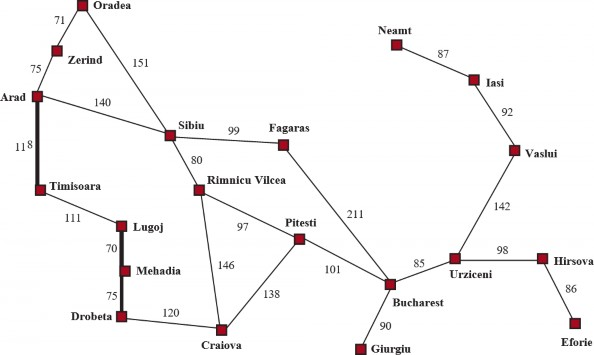
Đây là một thuộc tính quan trọng mà trong một môi trường có thể quan sát đầy đủ, xác định, đã
biết, giải pháp cho bất kỳ vấn đề nào là một chuỗi hành động cố định: lái xe đến Sibiu, sau đó
Fagaras, sau đó Bucharest. Nếu mô hình là đúng, thì một khi tác nhân đã tìm thấy một giải pháp,
nó có thể bỏ qua các tri giác của mình trong khi nó đang thực thi các hành động—có thể nói là
nhắm mắt lại—bởi vì giải pháp được đảm bảo sẽ dẫn đến mục tiêu. Các nhà lý thuyết điều khiển
gọi đây là một hệ thống vòng hở (open-loop system): việc bỏ qua các tri giác phá vỡ vòng lặp
giữa tác nhân và môi trường. Nếu có khả năng mô hình không chính xác, hoặc môi trường không
xác định, thì tác nhân sẽ an toàn hơn khi sử dụng cách tiếp cận vòng kín (closed-loop) theo dõi
các tri giác (xem Phần 4.4).
Trong các môi trường có thể quan sát một phần hoặc không xác định, một giải pháp sẽ là một chiến
lược phân nhánh đề xuất các hành động tương lai khác nhau tùy thuộc vào tri giác nào đến. Ví dụ,
tác nhân có thể lên kế hoạch lái xe từ Arad đến Sibiu nhưng có thể cần một kế hoạch dự phòng
trong trường hợp nó đến Zerind một cách tình cờ hoặc tìm thấy một biển báo ghi “Drum Îinchis”
(Đường cấm).
Vấn đề tìm kiếm và giải pháp
Một vấn đề tìm kiếm có thể được định nghĩa một cách chính thức như sau:
Một tập hợp các trạng thái có thể mà môi trường có thể ở trong. Chúng ta gọi đây là không(state space).
Một tập hợp một hoặc nhiều trạng thái mục tiêu (goal states). Đôi khi có một trạng thái
mục tiêu (ví dụ: Bucharest), đôi khi có một tập hợp nhỏ các trạng thái mục tiêu thay thế,
và đôi khi mục tiêu được định nghĩa bởi một thuộc tính áp dụng cho nhiều trạng thái (có
khả năng là vô hạn). Ví dụ, trong một thế giới máy hút bụi, mục tiêu có thể là không có bụi
bẩn ở bất kỳ vị trí nào, bất kể các sự thật khác về trạng thái. Chúng ta có thể tính đến cả ba
khả năng này bằng cách chỉ định một phương thức IS-GOAL cho một vấn đề. Trong
chương này, chúng ta đôi khi sẽ nói “mục tiêu” để đơn giản, nhưng những gì chúng ta nói
cũng áp dụng cho “bất kỳ một trong các trạng thái mục tiêu có thể.”
Các hành động (action) có sẵn cho tác nhân. Với một trạng thái 𝑠 , ACTIONS(s) trả về
một tập hợp hữu hạn các hành động có thể được thực thi trong 𝑠 . Chúng ta nói rằng mỗi
hành động này là áp dụng được (applicable) trong 𝑠 . Một ví dụ: Actions(Arad) = {ToSibiu,
ToTimisoara, ToZerind}.
Một mô hình chuyển tiếp (transition model), mô tả những gì mỗi hành động làm.
RESULT(s, a) trả về trạng thái là kết quả của việc thực hiện hành động 𝑎 trong trạng thái
𝑠 . Ví dụ, RESULT(Arad, ToZerind) = Zerind.
Một hàm chi phí hành động (action cost function), được ký hiệu là ACTION-COST(s,khi chúng ta đang lập trình hoặc 𝑐(𝑠, 𝑎, 𝑠′) khi chúng ta đang làm toán, đưa ra chi phí
số của việc áp dụng hành động 𝑎 trong trạng thái 𝑠 để đạt đến trạng thái 𝑠′ . Một tác nhân
giải quyết vấn đề nên sử dụng một hàm chi phí phản ánh thước đo hiệu suất của chính nó;
ví dụ, đối với các tác nhân tìm đường, chi phí của một hành động có thể là chiều dài theo
dặm (như trong Hình 3.1), hoặc có thể là thời gian cần thiết để hoàn thành hành động.
Một chuỗi các hành động tạo thành một đường dẫn (path), và một giải pháp (solution) là một
đường dẫn từ trạng thái ban đầu đến một trạng thái mục tiêu. Chúng ta giả định rằng chi phí hành
động là cộng gộp; tức là, tổng chi phí của một đường dẫn là tổng của các chi phí hành động riêng
lẻ. Một giải pháp tối ưu (optimal solution) có chi phí đường dẫn thấp nhất trong số tất cả các giải
pháp. Trong chương này, chúng ta giả định rằng tất cả các chi phí hành động sẽ là dương, để tránh
một số biến chứng.
Không gian trạng thái có thể được biểu diễn dưới dạng một đồ thị (graph) trong đó các đỉnh là
trạng thái và các cạnh có hướng giữa chúng là hành động. Bản đồ Romania được hiển thị trong
Hình 3.1 là một đồ thị như vậy, trong đó mỗi con đường chỉ ra hai hành động, một trong mỗi
hướng.
Xây dựng vấn đề
Việc xây dựng vấn đề đến Bucharest của chúng ta là một mô hình—một mô tả toán học trừu
tượng—chứ không phải là thứ thật. Hãy so sánh mô tả trạng thái nguyên tử đơn giản Arad với
một chuyến đi thực tế xuyên quốc gia, trong đó trạng thái của thế giới bao gồm rất nhiều thứ:
những người bạn đồng hành, chương trình radio hiện tại, phong cảnh ngoài cửa sổ, sự gần gũi của
các nhân viên thực thi pháp luật, khoảng cách đến điểm dừng chân tiếp theo, tình trạng của con
đường, thời tiết, giao thông, v.v. Tất cả những cân nhắc này đều bị loại bỏ khỏi mô hình của chúng
ta vì chúng không liên quan đến vấn đề tìm một tuyến đường đến Bucharest.
Quá trình loại bỏ chi tiết khỏi một biểu diễn được gọi là trừu tượng hóa (abstraction). Một việc
xây dựng vấn đề tốt có mức độ chi tiết phù hợp. Nếu các hành động ở mức độ “di chuyển chân
phải về phía trước một centimet” hoặc “quay vô lăng sang trái một độ,” tác nhân có lẽ sẽ không
bao giờ tìm thấy lối ra khỏi bãi đậu xe, chứ đừng nói đến Bucharest.
Chúng ta có thể chính xác hơn về mức độ trừu tượng thích hợp không? Hãy nghĩ về các trạng thái
và hành động trừu tượng mà chúng ta đã chọn tương ứng với các tập hợp lớn các trạng thái thế
giới chi tiết và các chuỗi hành động chi tiết. Bây giờ hãy xem xét một giải pháp cho vấn đề trừu
tượng: ví dụ, đường dẫn từ Arad đến Sibiu đến Rimnicu Vilcea đến Pitesti đến Bucharest. Giải
pháp trừu tượng này tương ứng với một số lượng lớn các đường dẫn chi tiết hơn. Ví dụ, chúng ta
có thể lái xe với radio bật giữa Sibiu và Rimnicu Vilcea, và sau đó tắt nó trong phần còn lại của
chuyến đi.
Sự trừu tượng hóa là hợp lệ nếu chúng ta có thể làm rõ bất kỳ giải pháp trừu tượng nào thành một
giải pháp trong thế giới chi tiết hơn; một điều kiện đủ là đối với mỗi trạng thái chi tiết “ở Arad,”
có một đường dẫn chi tiết đến một trạng thái nào đó “ở Sibiu,” v.v. Sự trừu tượng hóa là hữu ích
nếu việc thực hiện mỗi hành động trong giải pháp dễ dàng hơn vấn đề ban đầu; trong trường hợp
của chúng ta, hành động “lái xe từ Arad đến Sibiu” có thể được thực hiện mà không cần tìm kiếm
hoặc lập kế hoạch thêm bởi một tài xế có kỹ năng trung bình. Do đó, việc lựa chọn một sự trừu
tượng hóa tốt liên quan đến việc loại bỏ càng nhiều chi tiết càng tốt trong khi vẫn giữ được tính
hợp lệ và đảm bảo rằng các hành động trừu tượng dễ thực hiện. Nếu không có khả năng xây dựng
các sự trừu tượng hóa hữu ích, các tác nhân thông minh sẽ hoàn toàn bị choáng ngợp bởi thế giới
thực.
Ví dụ về các vấn đề
Cách tiếp cận giải quyết vấn đề đã được áp dụng cho một loạt các môi trường tác vụ. Chúng ta liệt
kê một số vấn đề nổi tiếng nhất ở đây, phân biệt giữa các vấn đề tiêu chuẩn hóa (standardized) và
thế giới thực (real-world). Một vấn đề tiêu chuẩn hóa nhằm minh họa hoặc rèn luyện các phương
pháp giải quyết vấn đề khác nhau. Nó có thể được đưa ra một mô tả chính xác, ngắn gọn và do đó
phù hợp làm chuẩn mực để các nhà nghiên cứu so sánh hiệu suất của các thuật toán. Một vấn đề
thế giới thực, chẳng hạn như điều hướng robot, là vấn đề mà các giải pháp của nó được con người
thực sự sử dụng và việc xây dựng nó là đặc trưng, không tiêu chuẩn, vì, ví dụ, mỗi robot có các
cảm biến khác nhau tạo ra dữ liệu khác nhau.
Vấn đề tiêu chuẩn hóa
Một vấn đề thế giới lưới (grid world problem) là một mảng hình chữ nhật hai chiều gồm các ô
vuông trong đó các tác nhân có thể di chuyển từ ô này sang ô khác. Thông thường, tác nhân có thể
di chuyển đến bất kỳ ô liền kề nào không có chướng ngại vật—theo chiều ngang hoặc chiều dọc
và trong một số vấn đề là theo đường chéo. Các ô có thể chứa các đối tượng, mà tác nhân có thể
nhặt, đẩy hoặc tác động lên; một bức tường hoặc chướng ngại vật không thể vượt qua khác trong
một ô ngăn cản tác nhân di chuyển vào ô đó. Thế giới máy hút bụi từ Phần 2.1 có thể được xây
dựng như một vấn đề thế giới lưới như sau:
Trạng thái: Một trạng thái của thế giới cho biết những đối tượng nào ở trong những ô nào.
Đối với thế giới máy hút bụi, các đối tượng là tác nhân và bất kỳ bụi bẩn nào. Trong phiên
bản hai ô đơn giản, tác nhân có thể ở trong một trong hai ô và mỗi ô có thể chứa bụi bẩn
hoặc không, vì vậy có 2 ⋅ 2 ⋅ 2 = 8 trạng thái (xem Hình 3.2). Nói chung, một môi trường
máy hút bụi có 𝑛 ô có 𝑛 ⋅ 2𝑛 trạng thái.
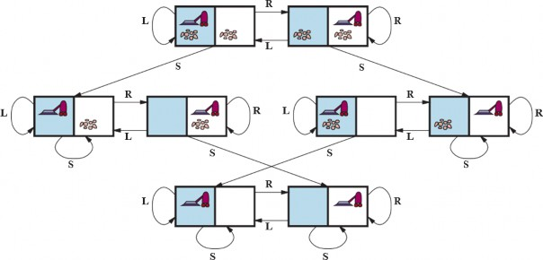
động cho mỗi trạng thái: L = Trái, R = Phải, S = Hút.
Một loại thế giới lưới khác là câu đố sokoban (sokoban puzzle), trong đó mục tiêu của tác nhân
là đẩy một số hộp, rải rác trên lưới, đến các vị trí lưu trữ được chỉ định. Có thể có tối đa một hộp
trên mỗi ô. Khi một tác nhân di chuyển về phía trước vào một ô có chứa một hộp và có một ô trống
ở phía bên kia của hộp, thì cả hộp và tác nhân đều di chuyển về phía trước. Tác nhân không thể
đẩy một hộp vào một hộp khác hoặc một bức tường. Đối với một thế giới có 𝑛 ô không chướng
ngại vật và 𝑏 hộp, có 𝑛 × 𝑛!/(𝑏! (𝑛 − 𝑏)!) trạng thái; ví dụ trên một lưới 8 × 8 với một tá hộp, có
hơn 200 nghìn tỷ trạng thái.
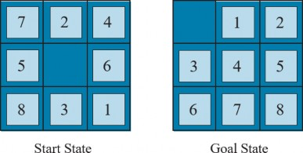
Trong một câu đố xếp gạch trượt (sliding-tile puzzle), một số gạch (đôi khi được gọi là khối hoặc
mảnh) được sắp xếp trong một lưới với một hoặc nhiều khoảng trống để một số gạch có thể trượt
vào khoảng trống. Một biến thể là câu đố Rush Hour, trong đó ô tô và xe tải trượt xung quanh
một lưới 6 × 6 để cố gắng giải phóng một chiếc ô tô khỏi ùn tắc giao thông. Có lẽ biến thể nổi
tiếng nhất là 8-puzzle (xem Hình 3.3), bao gồm một lưới 3 × 3 với tám gạch được đánh số và một
khoảng trống, và 15-puzzle trên một lưới 4 × 4. Mục tiêu là đạt đến một trạng thái mục tiêu được
chỉ định, chẳng hạn như trạng thái được hiển thị ở bên phải của hình. Việc xây dựng tiêu chuẩn
của câu đố 8-puzzle như sau:
Mô hình chuyển tiếp: Ánh xạ một trạng thái và hành động đến một trạng thái kết quả; ví
dụ, nếu chúng ta áp dụng Trái cho trạng thái bắt đầu trong Hình 3.3, trạng thái kết quả sẽ
có gạch 5 và khoảng trống hoán đổi.
thường chỉ định một trạng thái với các số theo thứ tự, như trong Hình 3.3.
Lưu ý rằng mọi việc xây dựng vấn đề đều liên quan đến các sự trừu tượng hóa. Các hành động của
8-puzzle được trừu tượng hóa thành các trạng thái bắt đầu và cuối của chúng, bỏ qua các vị trí
trung gian nơi gạch đang trượt. Chúng ta đã trừu tượng hóa các hành động như lắc bảng khi gạch
bị kẹt và loại trừ việc lấy gạch ra bằng dao và đặt chúng lại. Chúng ta còn lại với một mô tả về các
quy tắc, tránh tất cả các chi tiết về thao tác vật lý.
Vấn đề tiêu chuẩn hóa cuối cùng của chúng ta được Donald Knuth (1964) nghĩ ra và minh họa
cách không gian trạng thái vô hạn có thể phát sinh. Knuth phỏng đoán rằng bắt đầu với số 4, một
chuỗi các phép toán căn bậc hai, làm tròn xuống và giai thừa có thể đạt được bất kỳ số nguyên
dương mong muốn nào. Ví dụ, chúng ta có thể đạt được 5 từ 4 như sau:
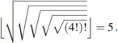
Định nghĩa vấn đề rất đơn giản:
Không gian trạng thái cho vấn đề này là vô hạn: đối với bất kỳ số nguyên nào lớn hơn 2, toán tử
giai thừa sẽ luôn tạo ra một số nguyên lớn hơn. Vấn đề này thú vị vì nó khám phá các số rất lớn:
đường dẫn ngắn nhất đến 5 đi qua $\left(4\right!\right)\right!=620.448.401.733.239.439.360.000$
. Không gian trạng thái vô hạn thường xuyên phát sinh trong các tác vụ liên quan đến việc tạo ra
các biểu thức toán học, mạch điện, bằng chứng, chương trình và các đối tượng được định nghĩa đệ
quy khác.
Vấn đề thế giới thực
Chúng ta đã thấy cách vấn đề tìm đường được định nghĩa theo các vị trí được chỉ định và các
chuyển tiếp dọc theo các cạnh giữa chúng. Các thuật toán tìm đường được sử dụng trong nhiều
ứng dụng khác nhau. Một số, chẳng hạn như các trang web và hệ thống trong ô tô cung cấp chỉ
đường lái xe, là các phần mở rộng tương đối đơn giản của ví dụ Romania. (Các biến chứng chính
là chi phí thay đổi do sự chậm trễ phụ thuộc vào giao thông và việc định tuyến lại do đường bị
đóng.) Những vấn đề khác, chẳng hạn như định tuyến luồng video trong mạng máy tính, lập kế
hoạch hoạt động quân sự và hệ thống lập kế hoạch du lịch hàng không, liên quan đến các đặc tả
phức tạp hơn nhiều. Hãy xem xét các vấn đề du lịch hàng không phải được giải quyết bởi một
trang web lập kế hoạch du lịch:
Các hệ thống tư vấn du lịch thương mại sử dụng một việc xây dựng vấn đề loại này, với nhiều biến
chứng bổ sung để xử lý cấu trúc giá vé phức tạp của các hãng hàng không. Tuy nhiên, bất kỳ du
khách dày dặn nào cũng biết rằng không phải tất cả các chuyến du lịch hàng không đều diễn ra
theo kế hoạch. Một hệ thống thực sự tốt nên bao gồm các kế hoạch dự phòng—điều gì sẽ xảy ra
nếu chuyến bay này bị trì hoãn và lỡ chuyến bay nối chuyến?
Các vấn đề du lịch (touring problem) mô tả một tập hợp các địa điểm phải được ghé thăm, thay
vì một điểm đến mục tiêu duy nhất. Vấn đề người bán hàng rong (traveling salesperson problem
- TSP) là một vấn đề du lịch trong đó mọi thành phố trên bản đồ phải được ghé thăm. Mục đích là
tìm một chuyến đi với chi phí < C (hoặc trong phiên bản tối ưu hóa, để tìm một chuyến đi với chi
phí thấp nhất có thể). Một lượng lớn nỗ lực đã được dành ra để cải thiện khả năng của các thuật
toán TSP. Các thuật toán cũng có thể được mở rộng để xử lý các đội xe. Ví dụ, một thuật toán tìm
kiếm và tối ưu hóa để định tuyến xe buýt trường học ở Boston đã tiết kiệm được 5 triệu đô la, cắt
giảm giao thông và ô nhiễm không khí, và tiết kiệm thời gian cho tài xế và học sinh (Bertsimas et
al., 2019). Ngoài việc lập kế hoạch các chuyến đi, các thuật toán tìm kiếm đã được sử dụng cho
các tác vụ như lập kế hoạch di chuyển của máy khoan bảng mạch tự động và của máy xếp hàng
trên sàn cửa hàng.
Một vấn đề bố trí VLSI (VLSI layout) yêu cầu định vị hàng triệu thành phần và kết nối trên một
con chip để giảm thiểu diện tích, giảm thiểu độ trễ mạch, giảm thiểu điện dung lạc và tối đa hóa
năng suất sản xuất. Vấn đề bố trí xuất hiện sau giai đoạn thiết kế logic và thường được chia thành
hai phần: bố trí ô và định tuyến kênh. Trong bố trí ô, các thành phần nguyên thủy của mạch được
nhóm lại thành các ô, mỗi ô thực hiện một chức năng được công nhận. Mỗi ô có một dấu chân cố
định (kích thước và hình dạng) và yêu cầu một số kết nối nhất định với mỗi ô khác. Mục đích là
đặt các ô trên chip sao cho chúng không chồng chéo và có chỗ cho các dây kết nối được đặt giữa
các ô. Định tuyến kênh tìm một tuyến đường cụ thể cho mỗi dây thông qua các khoảng trống giữa
các ô. Các vấn đề tìm kiếm này cực kỳ phức tạp, nhưng chắc chắn đáng để giải quyết.
Thuật toán tìm kiếm
Một thuật toán tìm kiếm (search algorithm) lấy một bài toán tìm kiếm làm đầu vào và trả về một
giải pháp hoặc một chỉ báo về sự thất bại. Trong chương này, chúng ta xem xét các thuật toán
chồng một cây tìm kiếm lên đồ thị không gian trạng thái, tạo thành các đường dẫn khác nhau từ
trạng thái ban đầu, cố gắng tìm một đường dẫn đạt đến trạng thái mục tiêu. Mỗi nút (node) trong
cây tìm kiếm tương ứng với một trạng thái trong không gian trạng thái và các cạnh trong cây tìm
kiếm tương ứng với các hành động. Nút gốc của cây tương ứng với trạng thái ban đầu của bài toán.
Điều quan trọng là phải hiểu sự khác biệt giữa không gian trạng thái và cây tìm kiếm. Không gian
trạng thái mô tả tập hợp các trạng thái (có thể là vô hạn) trong thế giới và các hành động cho phép
chuyển đổi từ trạng thái này sang trạng thái khác. Cây tìm kiếm mô tả các đường dẫn giữa các
trạng thái này, tiếp cận mục tiêu. Cây tìm kiếm có thể có nhiều đường dẫn đến (và do đó nhiều nút
cho) bất kỳ trạng thái nào, nhưng mỗi nút trong cây có một đường dẫn duy nhất trở lại nút gốc
(như trong tất cả các cây).
Hình 3.4 cho thấy một vài bước đầu tiên trong việc tìm đường dẫn từ Arad đến Bucharest. Nút gốc
của cây tìm kiếm ở trạng thái ban đầu, Arad. Chúng ta có thể mở rộng (expand) nút, bằng cách
xem xét các hành động có sẵn cho trạng thái đó, sử dụng hàm RESULT để xem các hành động
đó dẫn đến đâu, và tạo một nút mới (được gọi là nút con (child node) hoặc nút kế tiếp (successor
node)) cho mỗi trạng thái kết quả. Mỗi nút con có Arad làm nút cha (parent node) của nó.
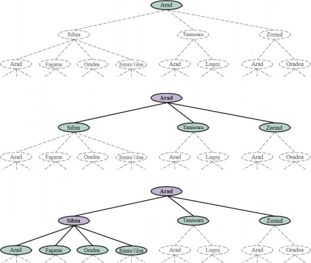
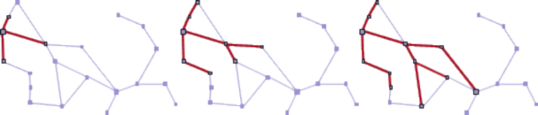
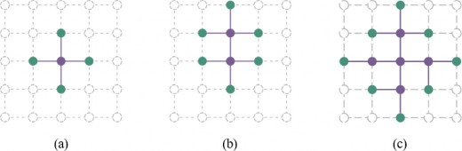
Bây giờ chúng ta phải chọn nút nào từ biên để mở rộng tiếp theo. Đây là bản chất của tìm kiếm—
theo đuổi một tùy chọn bây giờ và gác lại những tùy chọn khác để sau này. Giả sử chúng ta chọn
mở rộng Sibiu trước. Hình 3.4 (dưới cùng) cho thấy kết quả: một tập hợp 6 nút chưa được mở rộng
(được phác thảo bằng chữ đậm). Chúng ta gọi đây là biên (frontier) của cây tìm kiếm. Chúng ta
nói rằng bất kỳ trạng thái nào đã có một nút được tạo cho nó đã được đạt đến (reached) (cho dù
nút đó đã được mở rộng hay chưa). Hình 3.5 cho thấy cây tìm kiếm được chồng lên đồ thị không
gian trạng thái.
Lưu ý rằng biên tách biệt hai vùng của đồ thị không gian trạng thái: một vùng bên trong (interior)
nơi mọi trạng thái đã được mở rộng, và một vùng bên ngoài (exterior) gồm các trạng thái chưa
được đạt đến. Thuộc tính này được minh họa trong Hình 3.6.
Tìm kiếm tốt nhất đầu tiên
Làm thế nào chúng ta quyết định nút nào từ biên để mở rộng tiếp theo? Một cách tiếp cận rất chung
được gọi là tìm kiếm tốt nhất đầu tiên (best-first search), trong đó chúng ta chọn một nút, 𝑛 , với
giá trị tối thiểu của một số hàm đánh giá (evaluation function), 𝑓(𝑛) . Hình 3.7 cho thấy thuật
toán. Ở mỗi lần lặp, chúng ta chọn một nút trên biên với giá trị 𝑓(𝑛) tối thiểu, trả về nó nếu trạng
thái của nó là trạng thái mục tiêu và ngược lại áp dụng EXPAND để tạo các nút con. Mỗi nút con
được thêm vào biên nếu nó chưa được đạt đến trước đây, hoặc được thêm lại nếu nó hiện đang
được đạt đến với một đường dẫn có chi phí đường dẫn thấp hơn bất kỳ đường dẫn trước đó nào.
Thuật toán trả về một chỉ báo về sự thất bại, hoặc một nút đại diện cho một đường dẫn đến một
mục tiêu. Bằng cách sử dụng các hàm 𝑓(𝑛) khác nhau, chúng ta có được các thuật toán cụ thể khác
nhau, mà chương này sẽ đề cập.
function BEST-FIRST-SEARCH(problem, f) returns a solution node or failure
node ← NODE(STATE=problem.INITIAL)
frontier ← a priority queue ordered by f, with node as an element
reached ← a lookup table, with one entry with key problem.INITIAL and value node
while not IS-EMPTY(frontier) do
node ← POP(frontier)
if problem.IS-GOAL(node.STATE) then return node
for each child in EXPAND(problem, node) do
s ← child.State
if s is not in reached or child.PATH-COST < reached[s].PATH-COST then
reached[s] ← child
add child to frontier
return failure
function EXPAND(problem, node) yields nodes
s ← node.State
for each action in problem.Actions(s) do
s' ← problem.RESULT(s, action)
cost ← node.Path-Cost + problem.Action-Cost(s, action, s')
yield Node(State=s', Parent=node, Action=action, Path-Cost=cost)
được sử dụng ở đây được mô tả trong Phần 3.3.2. Xem Phụ lục B để biết yield.
Cấu trúc dữ liệu tìm kiếm
Các thuật toán tìm kiếm yêu cầu một cấu trúc dữ liệu để theo dõi cây tìm kiếm. Một nút trong cây
được biểu diễn bởi một cấu trúc dữ liệu với bốn thành phần:
node.PATH-COST: tổng chi phí của đường dẫn từ trạng thái ban đầu đến nút này. Trong
các công thức toán học, chúng ta sử dụng 𝑔(𝑛𝑜𝑑𝑒) như một từ đồng nghĩa với PATH-.
Theo các con trỏ PARENT quay ngược từ một nút cho phép chúng ta phục hồi các trạng thái và
hành động dọc theo đường dẫn đến nút đó. Thực hiện điều này từ một nút mục tiêu sẽ cho chúng
ta giải pháp.
Chúng ta cần một cấu trúc dữ liệu để lưu trữ biên. Lựa chọn thích hợp là một loại hàng đợi nào đó,
bởi vì các hoạt động trên biên là:
Một hàng đợi ưu tiên (priority queue) đầu tiên sẽ loại bỏ nút có chi phí tối thiểu theo một
số hàm đánh giá, 𝑓 . Nó được sử dụng trong tìm kiếm tốt nhất đầu tiên.
Một hàng đợi FIFO (first-in-first-out) đầu tiên sẽ loại bỏ nút đã được thêm vào hàng đợi
đầu tiên; chúng ta sẽ thấy nó được sử dụng trong tìm kiếm theo chiều rộng.
Một hàng đợi LIFO (last-in-first-out) (còn được gọi là một ngăn xếp (stack)) đầu tiên sẽ
loại bỏ nút được thêm vào gần đây nhất; chúng ta sẽ thấy nó được sử dụng trong tìm kiếm
theo chiều sâu.
Các trạng thái đã được đạt đến có thể được lưu trữ dưới dạng một bảng tra cứu (ví dụ: một bảng
băm) trong đó mỗi khóa là một trạng thái và mỗi giá trị là nút cho trạng thái đó.
Các đường dẫn dư thừa
Cây tìm kiếm được hiển thị trong Hình 3.4 (dưới cùng) bao gồm một đường dẫn từ Arad đến Sibiu
và quay trở lại Arad. Chúng ta nói rằng Arad là một trạng thái lặp lại (repeated state) trong cây
tìm kiếm, được tạo ra trong trường hợp này bởi một chu kỳ (cycle) (còn được gọi là đường dẫn(loopy path)). Vì vậy, mặc dù không gian trạng thái chỉ có 20 trạng thái, cây tìm kiếm hoàn
chỉnh là vô hạn vì không có giới hạn về số lần người ta có thể đi qua một vòng lặp.
Một chu kỳ là một trường hợp đặc biệt của một đường dẫn dư thừa (redundant path). Ví dụ,
chúng ta có thể đến Sibiu qua đường dẫn Arad–Sibiu (dài 140 dặm) hoặc đường dẫn Arad–Zerind–
Oradea–Sibiu (dài 297 dặm). Đường dẫn thứ hai này là dư thừa—nó chỉ là một cách tồi tệ hơn để
đến cùng một trạng thái—và không cần phải được xem xét trong hành trình tìm kiếm các đường
dẫn tối ưu của chúng ta.
Hãy xem xét một tác nhân trong một thế giới lưới 10 × 10, với khả năng di chuyển đến bất kỳ ô
nào trong số 8 ô liền kề. Nếu không có chướng ngại vật, tác nhân có thể đến bất kỳ ô nào trong số
100 ô trong 9 lần di chuyển hoặc ít hơn. Nhưng số lượng đường dẫn có độ dài 9 gần bằng 89 (ít
hơn một chút vì các cạnh của lưới), hoặc hơn 100 triệu. Nói cách khác, ô trung bình có thể được
đạt đến bởi hơn một triệu đường dẫn dư thừa có độ dài 9, và nếu chúng ta loại bỏ các đường dẫn
dư thừa, chúng ta có thể hoàn thành một tìm kiếm nhanh hơn khoảng một triệu lần. Như người ta
thường nói, các thuật toán không thể nhớ quá khứ thì sẽ lặp lại nó. Có ba cách tiếp cận cho vấn đề
này.
Đầu tiên, chúng ta có thể nhớ tất cả các trạng thái đã đạt đến trước đó (như tìm kiếm tốt nhất đầu
tiên làm), cho phép chúng ta phát hiện tất cả các đường dẫn dư thừa và chỉ giữ đường dẫn tốt nhất
đến mỗi trạng thái. Điều này phù hợp với các không gian trạng thái có nhiều đường dẫn dư thừa,
và là lựa chọn ưu tiên khi bảng các trạng thái đã đạt đến có thể vừa trong bộ nhớ.
Thứ hai, chúng ta có thể không lo lắng về việc lặp lại quá khứ. Có một số việc xây dựng vấn đề
mà hiếm khi hoặc không thể có hai đường dẫn đạt đến cùng một trạng thái. Một ví dụ sẽ là một
vấn đề lắp ráp trong đó mỗi hành động thêm một bộ phận vào một cụm lắp ráp đang phát triển, và
có một thứ tự các bộ phận sao cho có thể thêm A rồi B, nhưng không thể B rồi A. Đối với những
vấn đề đó, chúng ta có thể tiết kiệm không gian bộ nhớ nếu chúng ta không theo dõi các trạng thái
đã đạt đến và chúng ta không kiểm tra các đường dẫn dư thừa. Chúng ta gọi một thuật toán tìm
kiếm là tìm kiếm đồ thị (graph search) nếu nó kiểm tra các đường dẫn dư thừa và là tìm kiếm(tree-like search) nếu nó không kiểm tra. Thuật toán BEST-FIRST-SEARCH trong
Hình 3.7 là một thuật toán tìm kiếm đồ thị; nếu chúng ta loại bỏ tất cả các tham chiếu đến đã đạt, chúng ta sẽ có một tìm kiếm giống cây sử dụng ít bộ nhớ hơn nhưng sẽ kiểm tra các đường
dẫn dư thừa đến cùng một trạng thái, và do đó sẽ chạy chậm hơn.
Thứ ba, chúng ta có thể thỏa hiệp và kiểm tra các chu kỳ, nhưng không kiểm tra các đường dẫn dư
thừa nói chung. Vì mỗi nút có một chuỗi con trỏ cha, chúng ta có thể kiểm tra các chu kỳ mà không
cần thêm bộ nhớ bằng cách theo dõi chuỗi cha để xem trạng thái ở cuối đường dẫn có xuất hiện
sớm hơn trong đường dẫn hay không. Một số triển khai theo dõi chuỗi này suốt cả đường đi, và do
đó loại bỏ tất cả các chu kỳ; các triển khai khác chỉ theo dõi một vài liên kết (ví dụ: đến cha, ông
bà, và cụ), và do đó chỉ mất một lượng thời gian không đổi, trong khi loại bỏ tất cả các chu kỳ
ngắn (và dựa vào các cơ chế khác để xử lý các chu kỳ dài).
Đo lường hiệu suất giải quyết vấn đề
Trước khi chúng ta đi vào thiết kế của các thuật toán tìm kiếm khác nhau, chúng ta sẽ xem xét các
tiêu chí được sử dụng để lựa chọn giữa chúng. Chúng ta có thể đánh giá hiệu suất của một thuật
toán theo bốn cách:
Để hiểu tính đầy đủ, hãy xem xét một vấn đề tìm kiếm với một mục tiêu duy nhất. Mục tiêu đó có
thể ở bất cứ đâu trong không gian trạng thái; do đó, một thuật toán đầy đủ phải có khả năng khám
phá một cách có hệ thống mọi trạng thái có thể đạt được từ trạng thái ban đầu. Trong các không
gian trạng thái hữu hạn, điều đó rất dễ đạt được: miễn là chúng ta theo dõi các đường dẫn và cắt
bỏ những đường dẫn là chu kỳ (ví dụ: Arad đến Sibiu đến Arad), cuối cùng chúng ta sẽ đạt đến
mọi trạng thái có thể đạt được.
Trong các không gian trạng thái vô hạn, cần cẩn thận hơn. Ví dụ, một thuật toán liên tục áp dụng
toán tử “giai thừa” trong bài toán “4” của Knuth sẽ đi theo một đường dẫn vô hạn từ 4 đến 4! đến
(4!)!, và cứ thế. Tương tự, trên một lưới vô hạn không có chướng ngại vật, việc liên tục di chuyển
về phía trước theo một đường thẳng cũng đi theo một đường dẫn vô hạn của các trạng thái mới.
Trong cả hai trường hợp, thuật toán không bao giờ quay trở lại một trạng thái nó đã đạt được trước
đó, nhưng nó không đầy đủ vì các không gian rộng lớn của không gian trạng thái không bao giờ
được đạt đến.
Để đầy đủ, một thuật toán tìm kiếm phải có hệ thống (systematic) trong cách nó khám phá một
không gian trạng thái vô hạn, đảm bảo rằng nó cuối cùng có thể đạt được bất kỳ trạng thái nào
được kết nối với trạng thái ban đầu. Ví dụ, trên lưới vô hạn, một loại tìm kiếm có hệ thống là một
đường xoắn ốc bao phủ tất cả các ô cách gốc 𝑠 bước trước khi di chuyển ra ngoài đến các ô cách
gốc 𝑠 + 1 bước. Thật không may, trong một không gian trạng thái vô hạn không có giải pháp, một
thuật toán đúng đắn cần phải tiếp tục tìm kiếm mãi mãi; nó không thể kết thúc vì nó không thể biết
liệu trạng thái tiếp theo có phải là mục tiêu hay không.
Độ phức tạp thời gian và không gian được xem xét đối với một số thước đo độ khó của vấn đề.
Trong khoa học máy tính lý thuyết, thước đo điển hình là kích thước của đồ thị không gian trạng
thái, ∣ 𝑉 ∣ +∣ 𝐸 ∣ , trong đó ∣ 𝑉 ∣ là số đỉnh (nút trạng thái) của đồ thị và ∣ 𝐸 ∣ là số cạnh (cặp trạng
thái/hành động riêng biệt). Điều này phù hợp khi đồ thị là một cấu trúc dữ liệu tường minh, chẳng
hạn như bản đồ Romania. Nhưng trong nhiều vấn đề AI, đồ thị chỉ được biểu diễn một cách ngầm
định bởi trạng thái ban đầu, các hành động và mô hình chuyển tiếp. Đối với một không gian trạng
thái ngầm định, độ phức tạp có thể được đo lường theo 𝑑 , độ sâu (depth) hoặc số lượng hành
động trong một giải pháp tối ưu; 𝑚 , số lượng hành động tối đa trong bất kỳ đường dẫn nào; và 𝑏
, hệ số phân nhánh (branching factor) hoặc số nút kế tiếp của một nút cần được xem xét.
Chiến lược tìm kiếm không có thông tin
Một thuật toán tìm kiếm không có thông tin (uninformed search algorithm) không được cung
cấp bất kỳ manh mối nào về mức độ gần của một trạng thái với (các) mục tiêu. Ví dụ, hãy xem xét
tác nhân của chúng ta ở Arad với mục tiêu đến Bucharest. Một tác nhân không có thông tin và
không có kiến thức về địa lý Romania không có manh mối nào về việc đi đến Zerind hay Sibiu là
bước đầu tiên tốt hơn. Ngược lại, một tác nhân có thông tin (Phần 3.5), người biết vị trí của mỗi
thành phố, biết rằng Sibiu gần Bucharest hơn nhiều và do đó có nhiều khả năng nằm trên đường
dẫn ngắn nhất.
Tìm kiếm theo chiều rộng đầu tiên
Khi tất cả các hành động có cùng chi phí, một chiến lược thích hợp là tìm kiếm theo chiều rộng(breadth-first search), trong đó nút gốc được mở rộng đầu tiên, sau đó tất cả các nút kế
tiếp của nút gốc được mở rộng tiếp theo, sau đó là các nút kế tiếp của chúng, v.v. Đây là một chiến
lược tìm kiếm có hệ thống và do đó đầy đủ ngay cả trên các không gian trạng thái vô hạn. Chúng
ta có thể triển khai tìm kiếm theo chiều rộng đầu tiên như một lời gọi đến BEST-FIRST-SEARCHtrong đó hàm đánh giá 𝑓(𝑛) là độ sâu của nút—tức là số hành động cần để đạt đến nút.
Tuy nhiên, chúng ta có thể đạt được hiệu quả bổ sung với một vài thủ thuật. Một hàng đợi vào(first-in-first-out queue) sẽ nhanh hơn một hàng đợi ưu tiên và sẽ cho chúng ta thứ
tự nút chính xác: các nút mới (luôn sâu hơn cha của chúng) đi vào cuối hàng đợi, và các nút cũ,
nông hơn các nút mới, được mở rộng trước. Ngoài ra, đã đạt đến có thể là một tập hợp các trạng
thái chứ không phải là một ánh xạ từ trạng thái đến nút, bởi vì một khi chúng ta đã đạt đến một
trạng thái, chúng ta không bao giờ có thể tìm thấy một đường dẫn tốt hơn đến trạng thái đó. Điều
đó cũng có nghĩa là chúng ta có thể thực hiện kiểm tra mục tiêu sớm (early goal test), kiểm tra
xem một nút có phải là giải pháp ngay khi nó được tạo ra, thay vì kiểm tra mục tiêu muộn (late
goal test) mà tìm kiếm tốt nhất đầu tiên sử dụng, chờ cho đến khi một nút được lấy ra khỏi hàng
đợi. Hình 3.8 cho thấy tiến trình của một tìm kiếm theo chiều rộng đầu tiên trên một cây nhị phân
đơn giản, và Hình 3.9 cho thấy thuật toán với các cải tiến hiệu quả của việc kiểm tra mục tiêu sớm.
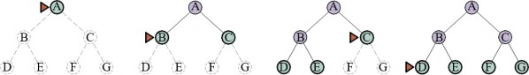
function BREADTH-FIRST-SEARCH(problem) returns a solution node or failure
node ← NODE(problem.INITIAL)
if problem.IS-GOAL(node.STATE) then return node
frontier ← a FIFO queue, with node as an element
reached ← {problem.INITIAL}
while not IS-EMPTY(frontier) do
node ← POP(frontier)
for each child in EXPAND(problem, node) do
s ← child.State
if problem.IS-GOAL(s) then return child
if s is not in reached then
add s to reached
add child to frontier
return failure
function UNIFORM-COST-SEARCH(problem) returns a solution node, or failure
return Best-First-Search(problem, Path-Cost)
Tìm kiếm theo chiều rộng đầu tiên luôn tìm thấy một giải pháp với số lượng hành động tối thiểu,
bởi vì khi nó đang tạo ra các nút ở độ sâu 𝑑 , nó đã tạo ra tất cả các nút ở độ sâu 𝑑 − 1 , vì vậy nếu
một trong số chúng là một giải pháp, nó sẽ được tìm thấy. Điều đó có nghĩa là nó tối ưu chi phí
đối với các vấn đề mà tất cả các hành động có cùng chi phí, nhưng không phải đối với các vấn đề
không có thuộc tính đó. Nó đầy đủ trong cả hai trường hợp. Về thời gian và không gian, hãy tưởng
tượng tìm kiếm một cây đồng nhất trong đó mỗi trạng thái có 𝑏 nút kế tiếp. Nút gốc của cây tìm
kiếm tạo ra 𝑏 nút, mỗi nút trong số đó tạo ra thêm 𝑏 nút, với tổng số 𝑏2 ở cấp độ thứ hai. Mỗi nút
này tạo ra thêm 𝑏 nút, tạo ra 𝑏3 nút ở cấp độ thứ ba, và cứ thế. Bây giờ giả sử rằng giải pháp ở độ
sâu 𝑑 . Khi đó, tổng số nút được tạo ra là:
1 + 𝑏 + 𝑏2 + 𝑏3 + 𝑐𝑑𝑜𝑡𝑠 + 𝑏𝑑 = 𝑂(𝑏𝑑)
Tất cả các nút vẫn còn trong bộ nhớ, vì vậy cả độ phức tạp thời gian và không gian đều là 𝑂(𝑏𝑑)
. Giới hạn lũy thừa như vậy thật đáng sợ. Là một ví dụ thế giới thực điển hình, hãy xem xét một
vấn đề với hệ số phân nhánh 𝑏 = 10 , tốc độ xử lý 1 triệu nút/giây và yêu cầu bộ nhớ 1 Kbyte/nút.
Một tìm kiếm đến độ sâu 𝑑 = 10 sẽ mất chưa đến 3 giờ, nhưng sẽ yêu cầu 10 terabyte bộ nhớ.
Yêu cầu bộ nhớ là một vấn đề lớn hơn đối với tìm kiếm theo chiều rộng đầu tiên so với thời gian
thực thi. Nhưng thời gian vẫn là một yếu tố quan trọng. Ở độ sâu 𝑑 = 14 , ngay cả với bộ nhớ vô
hạn, tìm kiếm sẽ mất 3,5 năm. Nói chung, các bài toán tìm kiếm có độ phức tạp lũy thừa không
thể được giải quyết bằng tìm kiếm không có thông tin đối với bất kỳ trường hợp nào ngoài những
trường hợp nhỏ nhất.
Thuật toán của Dijkstra hoặc tìm kiếm chi phí đồng đều
Khi các hành động có chi phí khác nhau, một lựa chọn rõ ràng là sử dụng tìm kiếm tốt nhất đầu
tiên trong đó hàm đánh giá là chi phí của đường dẫn từ nút gốc đến nút hiện tại. Điều này được
cộng đồng khoa học máy tính lý thuyết gọi là thuật toán của Dijkstra, và được cộng đồng AI gọi
là tìm kiếm chi phí đồng đều (uniform-cost search). Ý tưởng là trong khi tìm kiếm theo chiều
rộng đầu tiên lan ra theo các làn sóng có độ sâu đồng đều—đầu tiên là độ sâu 1, sau đó là độ sâu
2, v.v.—thì tìm kiếm chi phí đồng đều lan ra theo các làn sóng có chi phí đường dẫn đồng đều.
Thuật toán có thể được triển khai dưới dạng một lời gọi đến BEST-FIRST-SEARCH với PATH-làm hàm đánh giá, như trong Hình 3.9.
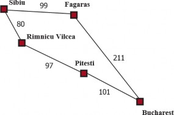
phí đồng đều.
Hãy xem xét Hình 3.10, trong đó vấn đề là đi từ Sibiu đến Bucharest. Các nút kế tiếp của Sibiu là
Rimnicu Vilcea và Fagaras, với chi phí lần lượt là 80 và 99. Nút có chi phí thấp nhất, Rimnicu
Vilcea, được mở rộng tiếp theo, thêm Pitesti với chi phí 80 + 97 = 177 . Nút có chi phí thấp nhất
bây giờ là Fagaras, vì vậy nó được mở rộng, thêm Bucharest với chi phí 99 + 211 = 310 .
Bucharest là mục tiêu, nhưng thuật toán chỉ kiểm tra mục tiêu khi nó mở rộng một nút, chứ không
phải khi nó tạo ra một nút, vì vậy nó vẫn chưa phát hiện ra đây là một đường dẫn đến mục tiêu.
Thuật toán tiếp tục, chọn Pitesti để mở rộng tiếp theo và thêm một đường dẫn thứ hai đến Bucharest
với chi phí 80 + 97 + 101 = 278 . Nó có chi phí thấp hơn, vì vậy nó thay thế đường dẫn trước
đó trong đã đạt đến và được thêm vào biên. Hóa ra nút này bây giờ có chi phí thấp nhất, vì vậy
nó được xem xét tiếp theo, được tìm thấy là một mục tiêu và được trả về. Lưu ý rằng nếu chúng ta
đã kiểm tra mục tiêu khi tạo một nút thay vì khi mở rộng nút có chi phí thấp nhất, thì chúng ta sẽ
trả về một đường dẫn có chi phí cao hơn (đường dẫn qua Fagaras).
Độ phức tạp của tìm kiếm chi phí đồng đều được đặc trưng bằng 𝐶∗ , chi phí của giải pháp tối ưu,
và 𝜖 , một cận dưới về chi phí của mỗi hành động, với 𝜖 > 0 . Khi đó, độ phức tạp thời gian và
không gian trong trường hợp xấu nhất của thuật toán là 𝑂(𝑏1+⌊𝐶∗/𝜖⌋) , có thể lớn hơn nhiều so với
𝑏𝑑 . Điều này là do tìm kiếm chi phí đồng đều có thể khám phá các cây hành động lớn với chi phí
thấp trước khi khám phá các đường dẫn liên quan đến một hành động có chi phí cao và có thể hữu
ích. Khi tất cả các chi phí hành động bằng nhau, 𝑏1+⌊𝐶∗/𝜖⌋ chỉ là 𝑏𝑑+1 , và tìm kiếm chi phí đồng
đều tương tự như tìm kiếm theo chiều rộng đầu tiên.
Tìm kiếm chi phí đồng đều là đầy đủ và tối ưu chi phí, bởi vì giải pháp đầu tiên nó tìm thấy sẽ
có chi phí ít nhất bằng chi phí của bất kỳ nút nào khác trong biên. Tìm kiếm chi phí đồng đều xem
xét tất cả các đường dẫn một cách có hệ thống theo thứ tự chi phí tăng dần, không bao giờ bị mắc
kẹt khi đi xuống một đường dẫn vô hạn (giả sử rằng tất cả các chi phí hành động đều > 𝜖 > 0 ).
Tìm kiếm theo chiều sâu đầu tiên và vấn đề bộ nhớ
Tìm kiếm theo chiều sâu đầu tiên (depth-first search) luôn mở rộng nút sâu nhất trong biên trước
tiên. Nó có thể được triển khai dưới dạng một lời gọi đến BEST-FIRST-SEARCH trong đó hàm
đánh giá 𝑓 là âm của độ sâu. Tuy nhiên, nó thường được triển khai không phải dưới dạng tìm kiếm
đồ thị mà là tìm kiếm giống cây không giữ một bảng các trạng thái đã đạt đến. Tiến trình của tìm
kiếm được minh họa trong Hình 3.11; tìm kiếm tiến hành ngay lập tức đến mức sâu nhất của cây
tìm kiếm, nơi các nút không có nút kế tiếp. Sau đó, tìm kiếm “quay lại” nút sâu nhất tiếp theo vẫn
còn các nút kế tiếp chưa được mở rộng. Tìm kiếm theo chiều sâu đầu tiên không tối ưu chi phí; nó
trả về giải pháp đầu tiên nó tìm thấy, ngay cả khi nó không phải là rẻ nhất.
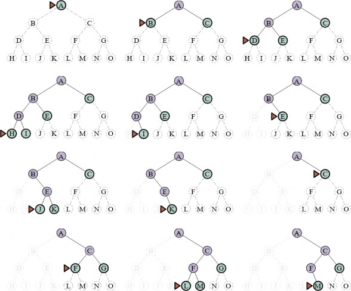
Đối với các không gian trạng thái hữu hạn là cây, nó hiệu quả và đầy đủ; đối với các không gian
trạng thái không có chu trình, nó có thể mở rộng cùng một trạng thái nhiều lần thông qua các
đường dẫn khác nhau, nhưng sẽ (cuối cùng) khám phá toàn bộ không gian một cách có hệ thống.
Trong các không gian trạng thái có chu trình, nó có thể bị kẹt trong một vòng lặp vô hạn; do đó
một số triển khai của tìm kiếm theo chiều sâu đầu tiên kiểm tra mỗi nút mới để tìm chu kỳ. Cuối
cùng, trong các không gian trạng thái vô hạn, tìm kiếm theo chiều sâu đầu tiên không có hệ thống:
nó có thể bị kẹt khi đi xuống một đường dẫn vô hạn, ngay cả khi không có chu kỳ. Do đó, tìm
kiếm theo chiều sâu đầu tiên không đầy đủ.
Với tất cả những tin xấu này, tại sao mọi người lại cân nhắc sử dụng tìm kiếm theo chiều sâu đầu
tiên thay vì tìm kiếm theo chiều rộng đầu tiên hoặc tìm kiếm tốt nhất đầu tiên? Câu trả lời là đối
với các vấn đề mà tìm kiếm giống cây là khả thi, tìm kiếm theo chiều sâu đầu tiên có nhu cầu về
bộ nhớ nhỏ hơn nhiều. Chúng ta không giữ một bảng đã đạt đến nào cả, và biên rất nhỏ: hãy nghĩ
về biên trong tìm kiếm theo chiều rộng đầu tiên như bề mặt của một hình cầu không ngừng mở
rộng, trong khi biên trong tìm kiếm theo chiều sâu đầu tiên chỉ là bán kính của hình cầu.
Đối với một không gian trạng thái giống cây hữu hạn như trong Hình 3.11, một tìm kiếm giống
cây theo chiều sâu đầu tiên mất thời gian tỷ lệ thuận với số lượng trạng thái, và có độ phức tạp bộ
nhớ chỉ là 𝑂(𝑏𝑚) , trong đó 𝑏 là hệ số phân nhánh và 𝑚 là độ sâu tối đa của cây. Một số vấn đề
sẽ yêu cầu exabyte bộ nhớ với tìm kiếm theo chiều rộng đầu tiên có thể được xử lý chỉ với kilobyte
bằng cách sử dụng tìm kiếm theo chiều sâu đầu tiên. Vì việc sử dụng bộ nhớ tiết kiệm của nó, tìm
kiếm giống cây theo chiều sâu đầu tiên đã được áp dụng làm nền tảng cơ bản của nhiều lĩnh vực
AI, bao gồm thỏa mãn ràng buộc (Chương 5), thỏa mãn mệnh đề (Chương 7) và lập trình logic
(Chương 9).
Một biến thể của tìm kiếm theo chiều sâu đầu tiên được gọi là tìm kiếm quay lui (backtracking
search) thậm chí còn sử dụng ít bộ nhớ hơn. (Xem Chương 5 để biết thêm chi tiết.) Trong tìm kiếm
quay lui, chỉ có một nút kế tiếp được tạo ra tại một thời điểm chứ không phải tất cả các nút kế tiếp;
mỗi nút được mở rộng một phần sẽ nhớ nút kế tiếp nào sẽ được tạo ra tiếp theo. Ngoài ra, các nút
kế tiếp được tạo ra bằng cách sửa đổi trực tiếp mô tả trạng thái hiện tại thay vì cấp phát bộ nhớ
cho một trạng thái hoàn toàn mới. Điều này làm giảm yêu cầu bộ nhớ xuống chỉ còn một mô tả
trạng thái và một đường dẫn gồm 𝑂(𝑚) hành động; một khoản tiết kiệm đáng kể so với 𝑂(𝑏𝑚)
trạng thái cho tìm kiếm theo chiều sâu đầu tiên. Với tìm kiếm quay lui, chúng ta cũng có tùy chọn
duy trì một cấu trúc dữ liệu tập hợp hiệu quả cho các trạng thái trên đường dẫn hiện tại, cho phép
chúng ta kiểm tra một đường dẫn chu trình trong thời gian 𝑂(1) thay vì 𝑂(𝑚) . Để tìm kiếm quay
lui hoạt động, chúng ta phải có khả năng hoàn tác mỗi hành động khi chúng ta quay lui. Tìm kiếm
quay lui rất quan trọng đối với sự thành công của nhiều vấn đề với mô tả trạng thái lớn, chẳng hạn
như lắp ráp robot.
Tìm kiếm giới hạn độ sâu và tìm kiếm lặp sâu dần
Để ngăn tìm kiếm theo chiều sâu đầu tiên đi lạc xuống một đường dẫn vô hạn, chúng ta có thể sử
dụng tìm kiếm giới hạn độ sâu (depth-limited search), một phiên bản của tìm kiếm theo chiều sâu
đầu tiên trong đó chúng ta cung cấp một giới hạn độ sâu, 𝑙 , và coi tất cả các nút ở độ sâu 𝑙 như
thể chúng không có nút kế tiếp (xem Hình 3.12). Độ phức tạp thời gian là 𝑂(𝑏𝑙) và độ phức tạp
không gian là 𝑂(𝑏𝑙) . Thật không may, nếu chúng ta chọn 𝑙 không tốt, thuật toán sẽ không tìm
thấy giải pháp, làm cho nó trở nên không đầy đủ.
Vì tìm kiếm theo chiều sâu đầu tiên là một tìm kiếm giống cây, chúng ta không thể ngăn nó lãng
phí thời gian vào các đường dẫn dư thừa nói chung, nhưng chúng ta có thể loại bỏ các chu kỳ với
chi phí là một số thời gian tính toán. Nếu chúng ta chỉ nhìn lên một vài liên kết trong chuỗi cha,
chúng ta có thể bắt được hầu hết các chu kỳ; các chu kỳ dài hơn được xử lý bởi giới hạn độ sâu.
Đôi khi một giới hạn độ sâu tốt có thể được chọn dựa trên kiến thức về vấn đề. Ví dụ, trên bản đồ
Romania có 20 thành phố. Do đó, 𝑙 = 19 là một giới hạn hợp lệ. Nhưng nếu chúng ta nghiên cứu
bản đồ một cách cẩn thận, chúng ta sẽ khám phá ra rằng bất kỳ thành phố nào cũng có thể được
đến từ bất kỳ thành phố nào khác trong tối đa 9 hành động. Con số này, được gọi là đường kínhcủa đồ thị không gian trạng thái, cho chúng ta một giới hạn độ sâu tốt hơn, dẫn đến một tìm kiếm
giới hạn độ sâu hiệu quả hơn. Tuy nhiên, đối với hầu hết các vấn đề, chúng ta sẽ không biết một
giới hạn độ sâu tốt cho đến khi chúng ta đã giải quyết vấn đề.
Tìm kiếm lặp sâu dần (iterative deepening search) giải quyết vấn đề chọn một giá trị tốt cho 𝑙
bằng cách thử tất cả các giá trị: đầu tiên là 0, sau đó là 1, sau đó là 2, v.v.—cho đến khi một giải
pháp được tìm thấy hoặc tìm kiếm giới hạn độ sâu trả về giá trị cắt cụt (cutoff) thay vì giá trị thất
bại. Thuật toán được hiển thị trong Hình 3.12. Tìm kiếm lặp sâu dần kết hợp nhiều lợi ích của tìm
kiếm theo chiều sâu đầu tiên và tìm kiếm theo chiều rộng đầu tiên. Giống như tìm kiếm theo chiều
sâu đầu tiên, yêu cầu bộ nhớ của nó là khiêm tốn: 𝑂(𝑏𝑑) khi có một giải pháp, hoặc 𝑂(𝑏𝑚) trên
các không gian trạng thái hữu hạn không có giải pháp. Giống như tìm kiếm theo chiều rộng đầu
tiên, tìm kiếm lặp sâu dần là tối ưu cho các vấn đề mà tất cả các hành động có cùng chi phí, và đầy
đủ trên các không gian trạng thái không có chu trình hữu hạn, hoặc trên bất kỳ không gian trạng
thái hữu hạn nào khi chúng ta kiểm tra các chu kỳ của nút trên suốt đường dẫn.
function ITERATIVE-DEEPENING-SEARCH(problem) returns a solution node or failure
for depth = 0 to ∞ do
result ← Depth-Limited-Search(problem, depth)
if result /= cutoff then return result
function DEPTH-LIMITED-SEARCH(problem, l) returns a node or failure or cutoff
frontier ← a LIFO queue (stack) with NODE(problem.INITIAL) as an element
result ← failure
while not IS-EMPTY(frontier) do
node ← POP(frontier)
if problem.IS-GOAL(node.STATE) then return node
if Depth(node) > l then
result ← cutoff
else if not IS-CYCLE(node) do
for each child in EXPAND(problem, node) do
add child to frontier
return result
Hình 3.12 Tìm kiếm lặp sâu dần và tìm kiếm giống cây giới hạn độ sâu. Tìm kiếm lặp sâu dần liên
tục áp dụng tìm kiếm giới hạn độ sâu với các giới hạn tăng dần. Nó trả về một trong ba loại giá trị
khác nhau: hoặc một nút giải pháp; hoặc failure, khi nó đã cạn kiệt tất cả các nút và chứng minh
không có giải pháp ở bất kỳ độ sâu nào; hoặc cutoff, có nghĩa là có thể có một giải pháp ở độ sâu
sâu hơn 𝑙 . Đây là một thuật toán tìm kiếm giống cây không theo dõi các trạng thái đã đạt đến, và
do đó sử dụng ít bộ nhớ hơn nhiều so với tìm kiếm tốt nhất đầu tiên, nhưng có nguy cơ ghé thăm
cùng một trạng thái nhiều lần trên các đường dẫn khác nhau. Ngoài ra, nếu việc kiểm tra IS-không kiểm tra tất cả các chu kỳ, thì thuật toán có thể bị mắc kẹt trong một vòng lặp.
Độ phức tạp thời gian là 𝑂(𝑏𝑑) khi có một giải pháp, hoặc 𝑂(𝑏𝑚) khi không có. Mỗi lần lặp của
tìm kiếm lặp sâu dần tạo ra một cấp độ mới, theo cùng một cách mà tìm kiếm theo chiều rộng đầu
tiên làm, nhưng tìm kiếm theo chiều rộng đầu tiên làm điều này bằng cách lưu trữ tất cả các nút
trong bộ nhớ, trong khi tìm kiếm lặp sâu dần làm điều đó bằng cách lặp lại các cấp độ trước đó, do
đó tiết kiệm bộ nhớ với chi phí là nhiều thời gian hơn. Hình 3.13 cho thấy bốn lần lặp của tìm kiếm
lặp sâu dần trên một cây tìm kiếm nhị phân, trong đó giải pháp được tìm thấy ở lần lặp thứ tư.
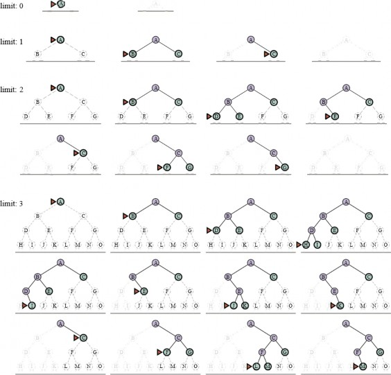
biên; các nút rất mờ có thể chứng minh không thể là một phần của giải pháp với giới hạn độ sâu
này.
Tìm kiếm lặp sâu dần có vẻ lãng phí vì các trạng thái gần đỉnh của cây tìm kiếm được tạo lại nhiều
lần. Nhưng đối với nhiều không gian trạng thái, hầu hết các nút đều ở cấp độ dưới cùng, vì vậy
việc các cấp độ trên được lặp lại không thành vấn đề. Trong một tìm kiếm lặp sâu dần, các nút ở
cấp độ dưới cùng (độ sâu 𝑑 ) được tạo ra một lần, những nút ở cấp độ kế cuối được tạo ra hai lần,
v.v., cho đến các nút con của nút gốc, được tạo ra 𝑑 lần. Vì vậy, tổng số nút được tạo ra trong
trường hợp xấu nhất là:
𝑁𝐼𝐷𝑆 = (𝑑)𝑏1 + (𝑑 − 1)𝑏2 + (𝑑 − 2)𝑏3 + 𝑐𝑑𝑜𝑡𝑠 + 𝑏𝑑
Điều này cho độ phức tạp thời gian là 𝑂(𝑏𝑑) —về mặt tiệm cận giống như tìm kiếm theo chiều
rộng đầu tiên. Ví dụ, nếu 𝑏 = 10 và 𝑑 = 5 , các con số là:
𝑁𝐼𝐷𝑆 = 50 + 400 + 3.000 + 20.000 + 100.000 = 123.450 𝑁𝐵𝐹𝑆 = 10 + 100 + 1.000 +
10.000 + 100.000 = 111.110
Nếu bạn thực sự lo lắng về sự lặp lại, bạn có thể sử dụng một cách tiếp cận kết hợp chạy tìm kiếm
theo chiều rộng đầu tiên cho đến khi gần như toàn bộ bộ nhớ có sẵn được sử dụng, và sau đó chạy
tìm kiếm lặp sâu dần từ tất cả các nút trong biên. Nói chung, tìm kiếm lặp sâu dần là phương pháp
tìm kiếm không có thông tin được ưu tiên khi không gian trạng thái tìm kiếm lớn hơn khả năng
chứa của bộ nhớ và độ sâu của giải pháp không được biết.
Tìm kiếm hai chiều
Các thuật toán chúng ta đã đề cập cho đến nay bắt đầu từ một trạng thái ban đầu và có thể đạt đến
bất kỳ trạng thái mục tiêu nào trong số nhiều trạng thái mục tiêu có thể có. Một cách tiếp cận thay
thế được gọi là tìm kiếm hai chiều (bidirectional search) đồng thời tìm kiếm tiến về phía trước từ
trạng thái ban đầu và lùi về phía sau từ các trạng thái mục tiêu, với hy vọng rằng hai tìm kiếm sẽ
gặp nhau. Động lực là 𝑏𝑑/2 + 𝑏𝑑/2 nhỏ hơn nhiều so với 𝑏𝑑 (ví dụ, nhỏ hơn 50.000 lần khi 𝑏 =
𝑑 = 10 ).
function BIBF-SEARCH(problemF, fF, problemB, fB) returns a solution node, or failure
nodeF ← NODE(problemF.INITIAL) // Nút cho một trạng thái bắt đầu
nodeB ← NODE(problemB.INITIAL) // Nút cho một trạng thái mục tiêu
frontierF ← a priority queue ordered by fF, with nodeF as an element
frontierB ← a priority queue ordered by fB, with nodeB as an element
reachedF ← a lookup table, with one key nodeF.STATE and value nodeF
reachedB ← a lookup table, with one key nodeB.STATE and value nodeB
solution ← failure
while not TERMINATED(solution, frontierF, frontierB) do
if fF(TOP(frontierF)) < fB(TOP(frontierB)) then
solution ← PROCEED(F, problemF, frontierF, reachedF, reachedB, solution)
else
solution ← PROCEED(B, problemB, frontierB, reachedB, reachedF, solution)
return solution
function PROCEED(dir, problem, frontier, reached, reached2, solution) returns a solution
// Mở rộng nút trên biên; kiểm tra với biên kia trong reached2.
// Biến "dir" là hướng: F cho tiến hoặc B cho lùi.
node ← POP(frontier)
for each child in EXPAND(problem, node) do
s ← child.State
if s not in reached or PATH-COST(child) < PATH-COST(reached[s]) then
reached[s] ← child
add child to frontier
if s is in reached2 then
solution2 ← JOIN-NODES(dir, child, reached2[s])
if PATH-COST(solution2) < PATH-COST(solution) then
solution ← solution2
return solution
Để điều này hoạt động, chúng ta cần theo dõi hai biên và hai bảng các trạng thái đã đạt đến, và
chúng ta cần có khả năng suy luận ngược: nếu trạng thái 𝑠′ là một nút kế tiếp của 𝑠 theo hướng
tiến, thì chúng ta cần biết rằng 𝑠 là một nút kế tiếp của 𝑠′ theo hướng lùi. Chúng ta có một giải
pháp khi hai biên va chạm.
Có nhiều phiên bản khác nhau của tìm kiếm hai chiều, giống như có nhiều thuật toán tìm kiếm một
chiều khác nhau. Trong phần này, chúng ta mô tả tìm kiếm tốt nhất đầu tiên hai chiều. Mặc dù
có hai biên riêng biệt, nút sẽ được mở rộng tiếp theo luôn là một nút có giá trị tối thiểu của hàm
đánh giá, trên cả hai biên. Khi hàm đánh giá là chi phí đường dẫn, chúng ta biết rằng giải pháp đầu
tiên được tìm thấy sẽ là một giải pháp tối ưu, nhưng với các hàm đánh giá khác nhau, điều đó
không nhất thiết phải đúng. Do đó, chúng ta theo dõi giải pháp tốt nhất được tìm thấy cho đến nay
và có thể phải cập nhật nó nhiều lần trước khi kiểm tra TERMINATED chứng minh rằng không
còn giải pháp tốt hơn có thể có.
So sánh các thuật toán tìm kiếm không có thông tin
Hình 3.15 so sánh các thuật toán tìm kiếm không có thông tin dựa trên bốn tiêu chí đánh giá được
đưa ra trong Phần 3.3.4. So sánh này dành cho các phiên bản tìm kiếm giống cây không kiểm tra
các trạng thái lặp lại. Đối với các tìm kiếm đồ thị có kiểm tra, sự khác biệt chính là tìm kiếm theo
chiều sâu đầu tiên là đầy đủ đối với các không gian trạng thái hữu hạn, và độ phức tạp không gian
và thời gian được giới hạn bởi kích thước của không gian trạng thái (số đỉnh và cạnh, ∣ 𝑉 ∣ +∣ 𝐸 ∣
).
Tiêu chí | Tìm kiếm | Tìm kiếm chi phí đồng đều | Tìm kiếm | Tìm kiếm | Tìm kiếm | Hai chiều (nếu áp |
Đầy đủ? | Có¹ | Có¹,² | Không | Không | Có¹ | Có¹,⁴ |
Chi phí tối ưu? | Có³ | Có | Không | Không | Có³ | Có³,⁴ |
Thời gian | 𝑂(𝑏𝑑) | 𝑂(𝑏1+⌊𝐶∗/𝜖⌋) | 𝑂(𝑏𝑚) | 𝑂(𝑏𝑙) | 𝑂(𝑏𝑑) | 𝑂(𝑏𝑑/2) |
Không | 𝑂(𝑏𝑑) | 𝑂(𝑏1+⌊𝐶∗/𝜖⌋) | 𝑂(𝑏𝑚) | 𝑂(𝑏𝑙) | 𝑂(𝑏𝑑) | 𝑂(𝑏𝑑/2) |
Hình 3.15 Đánh giá các thuật toán tìm kiếm. 𝑏 là hệ số phân nhánh; 𝑚 là độ sâu tối đa của cây tìm
kiếm; 𝑑 là độ sâu của giải pháp nông nhất, hoặc là 𝑚 khi không có giải pháp; 𝑙 là giới hạn độ sâu.
Các chú thích ở trên như sau: ¹ đầy đủ nếu 𝑏 là hữu hạn, và không gian trạng thái hoặc có một giải
pháp hoặc là hữu hạn. ² đầy đủ nếu tất cả chi phí hành động đều ≥ 𝜖 > 0 ; ³ tối ưu chi phí nếu tất
cả chi phí hành động đều giống hệt nhau; ⁴ nếu cả hai hướng đều là tìm kiếm theo chiều rộng đầu
tiên hoặc chi phí đồng đều.
Chiến lược tìm kiếm có thông tin (Heuristic)
Phần này cho thấy cách một chiến lược tìm kiếm có thông tin—một chiến lược sử dụng các gợi
ý dành riêng cho miền về vị trí của mục tiêu—có thể tìm thấy giải pháp hiệu quả hơn so với một
chiến lược không có thông tin. Các gợi ý đến dưới dạng một hàm heuristic, ký hiệu là ℎ(𝑛) :
ℎ(𝑛)
= 𝑐ℎ𝑖 𝑝ℎí ướ𝑐 𝑡í𝑛ℎ 𝑐ủ𝑎 đườ𝑛𝑔 𝑑ẫ𝑛 𝑟ẻ 𝑛ℎấ𝑡 𝑡ừ 𝑡𝑟ạ𝑛𝑔 𝑡ℎá𝑖 𝑡ạ𝑖 𝑛ú𝑡 𝑛 đế𝑛 𝑚ộ𝑡 𝑡𝑟ạ𝑛𝑔 𝑡ℎá𝑖 𝑚ụ𝑐 𝑡𝑖ê𝑢.
Ví dụ, trong các bài toán tìm đường, chúng ta có thể ước tính khoảng cách từ trạng thái hiện tại
đến một mục tiêu bằng cách tính khoảng cách đường chim bay trên bản đồ giữa hai điểm. Chúng
ta nghiên cứu các heuristic và chúng đến từ đâu chi tiết hơn trong Phần 3.6.
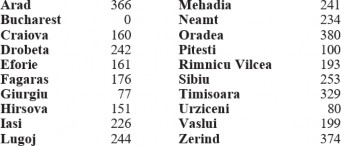
Hình 3.16 Các giá trị của ℎ𝑆𝐿𝐷 —khoảng cách đường chim bay đến Bucharest.
Tìm kiếm tốt nhất đầu tiên tham lam
Tìm kiếm tốt nhất đầu tiên tham lam (Greedy best-first search) là một dạng tìm kiếm tốt nhất
đầu tiên mở rộng nút có giá trị ℎ(𝑛) thấp nhất trước tiên—nút dường như gần mục tiêu nhất—dựa
trên cơ sở rằng điều này có khả năng dẫn đến một giải pháp nhanh chóng. Vì vậy, hàm đánh giá là
𝑓(𝑛) = ℎ(𝑛) .
Hãy xem điều này hoạt động như thế nào đối với các bài toán tìm đường ở Romania; chúng ta sử
dụng heuristic khoảng cách đường chim bay, mà chúng ta sẽ gọi là ℎ𝑆𝐿𝐷 . Nếu mục tiêu là
Bucharest, chúng ta cần biết khoảng cách đường chim bay đến Bucharest, được hiển thị trong Hình
3.16. Ví dụ, ℎ𝑆𝐿𝐷(𝐴𝑟𝑎𝑑) = 366 . Lưu ý rằng các giá trị của ℎ𝑆𝐿𝐷 không thể được tính toán từ
chính mô tả vấn đề (tức là các hàm ACTIONS và RESULT). Hơn nữa, phải mất một lượng kiến
thức nhất định về thế giới để biết rằng ℎ𝑆𝐿𝐷 có tương quan với khoảng cách đường bộ thực tế và
do đó là một heuristic hữu ích.
Hình 3.17 cho thấy tiến trình của một tìm kiếm giống cây tốt nhất đầu tiên tham lam sử dụng ℎ𝑆𝐿𝐷
để tìm đường dẫn từ Arad đến Bucharest. Nút đầu tiên được mở rộng từ Arad sẽ là Sibiu vì heuristic
nói rằng nó gần Bucharest hơn so với Zerind hoặc Timisoara. Nút tiếp theo được mở rộng sẽ là
Fagaras vì nó hiện gần nhất theo heuristic. Fagaras đến lượt nó tạo ra Bucharest, là mục tiêu. Đối
với bài toán cụ thể này, tìm kiếm tốt nhất đầu tiên tham lam sử dụng ℎ𝑆𝐿𝐷 tìm thấy một giải pháp
mà không bao giờ mở rộng một nút không nằm trên đường dẫn giải pháp. Tuy nhiên, giải pháp nó
tìm thấy không có chi phí tối ưu: đường dẫn qua Sibiu và Fagaras đến Bucharest dài hơn 32 dặm
so với đường dẫn qua Rimnicu Vilcea và Pitesti. Đây là lý do tại sao thuật toán được gọi là “tham
lam”—ở mỗi lần lặp, nó cố gắng đến gần mục tiêu nhất có thể, nhưng sự tham lam có thể dẫn đến
kết quả tồi tệ hơn so với việc cẩn thận.
Tìm kiếm đồ thị tốt nhất đầu tiên tham lam là đầy đủ trong các không gian trạng thái hữu hạn,
nhưng không phải trong các không gian vô hạn. Độ phức tạp thời gian và không gian trong trường
hợp xấu nhất là 𝑂(∣ 𝑉 ∣) . Tuy nhiên, với một hàm heuristic tốt, độ phức tạp có thể được giảm đáng
kể, trên một số vấn đề đạt đến 𝑂(𝑏𝑚) .
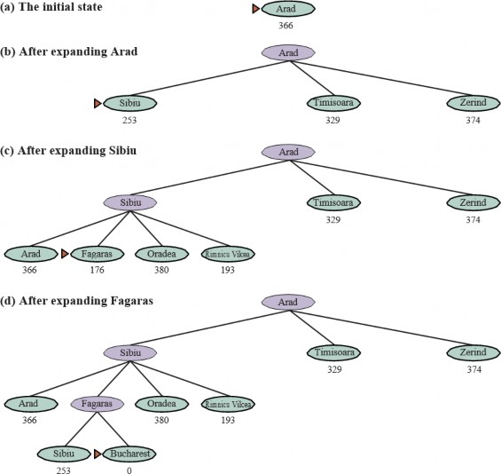
Hình 3.17 Các giai đoạn trong một tìm kiếm giống cây tốt nhất đầu tiên tham lam cho Bucharest
với heuristic khoảng cách đường chim bay ℎ𝑆𝐿𝐷 . Các nút được gắn nhãn bằng các giá trị ℎ của
chúng.
Tìm kiếm A*
Thuật toán tìm kiếm có thông tin phổ biến nhất là tìm kiếm A* (phát âm là “A-star search”), một
tìm kiếm tốt nhất đầu tiên sử dụng hàm đánh giá:
𝑓(𝑛) = 𝑔(𝑛) + ℎ(𝑛)
trong đó 𝑔(𝑛) là chi phí đường dẫn từ trạng thái ban đầu đến nút 𝑛 , và ℎ(𝑛) là chi phí ước tính
của đường dẫn ngắn nhất từ 𝑛 đến một trạng thái mục tiêu, vì vậy chúng ta có:
𝑓(𝑛) = 𝑐ℎ𝑖𝑝ℎ𝚤ˊướ𝑐𝑡𝚤ˊ𝑛ℎ𝑐ủ𝑎đườ𝑛𝑔𝑑𝑎ˆ˜𝑛𝑡𝑜ˆˊ𝑡𝑛ℎ𝑎ˆˊ𝑡𝑡𝑖𝑒ˆˊ𝑝𝑡ụ𝑐𝑡ừ𝑛đ𝑒ˆˊ𝑛𝑚ộ𝑡𝑚ụ𝑐𝑡𝑖𝑒ˆ𝑢.
Trong Hình 3.18, chúng ta thấy tiến trình của một tìm kiếm A* với mục tiêu là đến Bucharest. Các
giá trị của 𝑔 được tính từ chi phí hành động trong Hình 3.1, và các giá trị của ℎ𝑆𝐿𝐷 được cho trong
Hình 3.16. Lưu ý rằng Bucharest lần đầu tiên xuất hiện trên biên ở bước (e), nhưng nó không được
chọn để mở rộng (và do đó không được phát hiện là một giải pháp) vì ở 𝑓 = 450 nó không phải
là nút có chi phí thấp nhất trên biên—đó sẽ là Pitesti, ở 𝑓 = 417 . Một cách khác để nói điều này
là có thể có một giải pháp thông qua Pitesti có chi phí thấp tới 417, vì vậy thuật toán sẽ không chấp
nhận một giải pháp có chi phí 450. Ở bước (f), một đường dẫn khác đến Bucharest bây giờ là nút
có chi phí thấp nhất, ở 𝑓 = 418 , vì vậy nó được chọn và được phát hiện là giải pháp tối ưu.
Tìm kiếm A* là đầy đủ. Việc A* có tối ưu chi phí hay không phụ thuộc vào một số thuộc tính của
heuristic. Một thuộc tính chính là tính chấp nhận được (admissibility): một heuristic chấp nhận
được là một heuristic không bao giờ ước tính quá cao chi phí để đạt đến một mục tiêu. (Do đó,
một heuristic chấp nhận được là lạc quan.) Với một heuristic chấp nhận được, A* là tối ưu chi phí,
điều mà chúng ta có thể chứng minh bằng phản chứng. Giả sử đường dẫn tối ưu có chi phí 𝐶∗ ,
nhưng thuật toán trả về một đường dẫn có chi phí 𝐶 > 𝐶∗ . Khi đó phải có một số nút 𝑛 nằm trên
đường dẫn tối ưu và chưa được mở rộng (bởi vì nếu tất cả các nút trên đường dẫn tối ưu đã được
mở rộng, thì chúng ta đã trả về giải pháp tối ưu đó). Vì vậy, sau đó, sử dụng ký hiệu 𝑔∗(𝑛) để chỉ
chi phí của đường dẫn tối ưu từ điểm bắt đầu đến 𝑛 , và ℎ∗(𝑛) để chỉ chi phí của đường dẫn tối ưu
từ 𝑛 đến mục tiêu gần nhất, chúng ta có:
𝑓(𝑛) > 𝐶∗ (nếu không thì 𝑛 đã được mở rộng) 𝑓(𝑛) = 𝑔(𝑛) + ℎ(𝑛) (theo định nghĩa) 𝑓(𝑛) =
𝑔∗(𝑛) + ℎ(𝑛) (vì 𝑛 nằm trên một đường dẫn tối ưu) 𝑓(𝑛) ≤ 𝑔∗(𝑛) + ℎ∗(𝑛) (vì tính chấp nhận
được, ℎ(𝑛) ≤ ℎ∗(𝑛) ) 𝑓(𝑛) ≤ 𝐶∗ (theo định nghĩa, 𝐶∗ = 𝑔∗(𝑛) + ℎ∗(𝑛) )
Dòng đầu tiên và dòng cuối cùng tạo thành một sự mâu thuẫn, vì vậy giả định rằng thuật toán có
thể trả về một đường dẫn dưới tối ưu phải sai—chắc chắn A* chỉ trả về các đường dẫn tối ưu chi
phí.
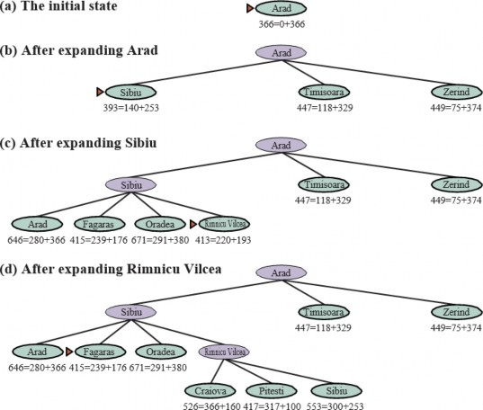
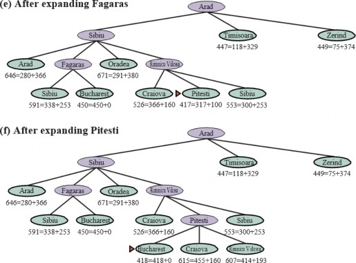
𝑔 + ℎ . Các giá trị ℎ là khoảng cách đường chim bay đến Bucharest lấy từ Hình 3.16.
Một thuộc tính mạnh hơn một chút được gọi là tính nhất quán (consistency). Một heuristic ℎ(𝑛)
là nhất quán nếu, đối với mọi nút 𝑛 và mọi nút kế tiếp 𝑛′ của 𝑛 được tạo ra bởi một hành động 𝑎 ,
chúng ta có:
ℎ(𝑛) ≤ 𝑐(𝑛, 𝑎, 𝑛′) + ℎ(𝑛′)
Đây là một dạng của bất đẳng thức tam giác, quy định rằng một cạnh của một tam giác không
thể dài hơn tổng của hai cạnh kia (xem Hình 3.19). Một ví dụ về một heuristic nhất quán là khoảng
cách đường chim bay ℎ𝑆𝐿𝐷 mà chúng ta đã sử dụng để đến Bucharest.
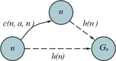
Hình 3.19 Bất đẳng thức tam giác: Nếu heuristic ℎ là nhất quán, thì một số duy nhất ℎ(𝑛) sẽ nhỏ
hơn tổng của chi phí 𝑐(𝑛, 𝑎, 𝑛′) của hành động từ 𝑛 đến 𝑛′ cộng với ước tính heuristic ℎ(𝑛′) .
Mọi heuristic nhất quán đều chấp nhận được (nhưng không ngược lại), vì vậy với một heuristic
nhất quán, A* là tối ưu chi phí. Ngoài ra, với một heuristic nhất quán, lần đầu tiên chúng ta đạt
đến một trạng thái, nó sẽ nằm trên một đường dẫn tối ưu, vì vậy chúng ta không bao giờ phải thêm
lại một trạng thái vào biên và không bao giờ phải thay đổi một mục trong đã đạt đến. Nhưng với
một heuristic không nhất quán, chúng ta có thể kết thúc với nhiều đường dẫn đạt đến cùng một
trạng thái, và nếu mỗi đường dẫn mới có chi phí đường dẫn thấp hơn đường dẫn trước đó, thì
chúng ta sẽ kết thúc với nhiều nút cho trạng thái đó trong biên, gây tốn cả thời gian và không gian.
Vì lý do đó, một số triển khai của A* cẩn thận chỉ nhập một trạng thái vào biên một lần, và nếu
một đường dẫn tốt hơn đến trạng thái đó được tìm thấy, tất cả các nút kế tiếp của trạng thái đó sẽ
được cập nhật (điều này đòi hỏi các nút phải có con trỏ con cũng như con trỏ cha). Những phức
tạp này đã khiến nhiều người triển khai tránh các heuristic không nhất quán, nhưng Felner và cộng
sự (2011) lập luận rằng những ảnh hưởng tồi tệ nhất hiếm khi xảy ra trong thực tế và người ta
không nên sợ các heuristic không nhất quán.
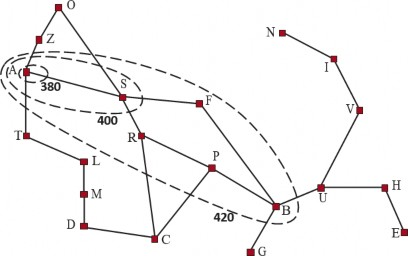
Hình 3.20 Bản đồ Romania cho thấy các đường đồng mức tại 𝑓 = 380, 𝑓 = 400 , và 𝑓 = 420 ,
với Arad là trạng thái bắt đầu. Các nút bên trong một đường đồng mức đã cho có chi phí 𝑓 =
𝑔 + ℎ nhỏ hơn hoặc bằng giá trị đường đồng mức.
Với một heuristic không chấp nhận được, A* có thể hoặc không tối ưu chi phí. Dưới đây là hai
trường hợp nó tối ưu: Thứ nhất, nếu có ít nhất một đường dẫn tối ưu chi phí mà trên đó ℎ(𝑛) là
chấp nhận được cho tất cả các nút 𝑛 trên đường dẫn, thì đường dẫn đó sẽ được tìm thấy, bất kể
heuristic nói gì về các trạng thái ngoài đường dẫn. Thứ hai, nếu giải pháp tối ưu có chi phí 𝐶∗ , và
giải pháp tốt thứ hai có chi phí 𝐶2 , và nếu ℎ(𝑛) ước tính quá cao một số chi phí, nhưng không bao
giờ nhiều hơn 𝐶2 − 𝐶∗ , thì A* được đảm bảo sẽ trả về các giải pháp tối ưu chi phí.
Các đường đồng mức tìm kiếm
Một cách hữu ích để hình dung một tìm kiếm là vẽ các đường đồng mức trong không gian trạng
thái, giống như các đường đồng mức trong bản đồ địa hình. Hình 3.20 cho thấy một ví dụ. Bên
trong đường đồng mức được dán nhãn 400, tất cả các nút có 𝑓(𝑛) = 𝑔(𝑛) + ℎ(𝑛) ≤ 400 , v.v.
Sau đó, vì A* mở rộng nút biên có chi phí 𝑓 thấp nhất, chúng ta có thể thấy rằng một tìm kiếm A*
lan ra từ nút bắt đầu, thêm các nút trong các dải đồng tâm có chi phí 𝑓 tăng dần.
Với tìm kiếm chi phí đồng đều, chúng ta cũng có các đường đồng mức, nhưng là của chi phí 𝑔 ,
không phải 𝑔 + ℎ . Các đường đồng mức với tìm kiếm chi phí đồng đều sẽ “tròn” xung quanh
trạng thái bắt đầu, lan ra đều theo mọi hướng mà không có sự ưu tiên nào đối với mục tiêu. Với
tìm kiếm A* sử dụng một heuristic tốt, các dải 𝑔 + ℎ sẽ kéo dài về phía một trạng thái mục tiêu
(như trong Hình 3.20) và trở nên tập trung hơn xung quanh một đường dẫn tối ưu.
Hình 3.20 Bản đồ Romania cho thấy các đường đồng mức tại 𝑓 = 380, 𝑓 = 400 , và 𝑓 = 420 ,
với Arad là trạng thái bắt đầu. Các nút bên trong một đường đồng mức đã cho có chi phí 𝑓 = 𝑔 +
ℎ nhỏ hơn hoặc bằng giá trị đường đồng mức.
Nên rõ ràng rằng khi bạn mở rộng một đường dẫn, chi phí 𝑔 là đơn điệu (monotonic): chi phí
đường dẫn luôn tăng khi bạn đi dọc theo một đường dẫn, vì chi phí hành động luôn dương. Do đó,
bạn có được các đường đồng mức đồng tâm không cắt nhau, và nếu bạn chọn vẽ các đường đủ
mịn, bạn có thể đặt một đường giữa bất kỳ hai nút nào trên bất kỳ đường dẫn nào.
Nhưng không rõ liệu chi phí 𝑓 = 𝑔 + ℎ có tăng đơn điệu hay không. Khi bạn mở rộng một đường
dẫn từ 𝑛 đến 𝑛′ , chi phí đi từ 𝑔(𝑛) + ℎ(𝑛) đến 𝑔(𝑛) + 𝑐(𝑛, 𝑎, 𝑛′) + ℎ(𝑛′) . Hủy bỏ số hạng 𝑔(𝑛)
, chúng ta thấy rằng chi phí của đường dẫn sẽ tăng đơn điệu nếu và chỉ nếu ℎ(𝑛) ≤ 𝑐(𝑛, 𝑎, 𝑛′) +
ℎ(𝑛′) ; nói cách khác nếu và chỉ nếu heuristic là nhất quán. Nhưng lưu ý rằng một đường dẫn có
thể đóng góp một vài nút liên tiếp với cùng điểm 𝑔(𝑛) + ℎ(𝑛) ; điều này sẽ xảy ra bất cứ khi nào
sự giảm trong ℎ chính xác bằng chi phí hành động vừa được thực hiện (ví dụ, trong một bài toán
lưới, khi 𝑛 ở cùng hàng với mục tiêu và bạn thực hiện một bước về phía mục tiêu, 𝑔 được tăng
thêm 1 và ℎ được giảm đi 1). Nếu 𝐶∗ là chi phí của đường dẫn giải pháp tối ưu, thì chúng ta có thể
nói những điều sau:
A* mở rộng tất cả các nút có thể đạt được từ trạng thái ban đầu trên một đường dẫn mà
mọi nút trên đường dẫn đều có 𝑓(𝑛) < 𝐶∗ . Chúng ta nói đây là các nút chắc chắn được(surely expanded nodes).
A* sau đó có thể mở rộng một số nút ngay trên “đường đồng mức mục tiêu” (nơi 𝑓(𝑛) =
𝐶∗ ) trước khi chọn một nút mục tiêu.
A* không mở rộng nút nào có 𝑓(𝑛) > 𝐶∗ .
Chúng ta nói rằng A* với một heuristic nhất quán là tối ưu hiệu quả (optimally efficient) theo
nghĩa là bất kỳ thuật toán nào mở rộng các đường dẫn tìm kiếm từ trạng thái ban đầu và sử dụng
cùng thông tin heuristic, phải mở rộng tất cả các nút chắc chắn được mở rộng bởi A* (vì bất kỳ
nút nào trong số chúng có thể là một phần của giải pháp tối ưu). Trong số các nút có 𝑓(𝑛) = 𝐶∗ ,
một thuật toán có thể may mắn và chọn nút tối ưu trước trong khi một thuật toán khác không may
mắn; chúng ta không xem xét sự khác biệt này trong việc xác định hiệu quả tối ưu.
A* hiệu quả vì nó cắt tỉa (prunes) các nút cây tìm kiếm không cần thiết để tìm một giải pháp tối
ưu. Trong Hình 3.18(b), chúng ta thấy rằng Timisoara có 𝑓 = 447 và Zerind có 𝑓 = 449 . Mặc
dù chúng là con của nút gốc và sẽ là một trong những nút đầu tiên được mở rộng bởi tìm kiếm chi
phí đồng đều hoặc tìm kiếm theo chiều rộng đầu tiên, chúng không bao giờ được mở rộng bởi tìm
kiếm A* vì giải pháp với 𝑓 = 418 được tìm thấy trước. Khái niệm cắt tỉa—loại bỏ các khả năng
khỏi sự xem xét mà không cần phải kiểm tra chúng—rất quan trọng đối với nhiều lĩnh vực của AI.
Việc tìm kiếm A* là đầy đủ, tối ưu chi phí và tối ưu hiệu quả trong số tất cả các thuật toán như
vậy là khá thỏa mãn. Thật không may, điều đó không có nghĩa là A* là câu trả lời cho tất cả các
nhu cầu tìm kiếm của chúng ta. Vấn đề là đối với nhiều bài toán, số nút được mở rộng có thể là
hàm mũ theo độ dài của giải pháp. Ví dụ, hãy xem xét một phiên bản của thế giới chân không với
một chân không siêu mạnh có thể dọn dẹp bất kỳ ô vuông nào với chi phí 1 đơn vị, mà không cần
phải ghé thăm ô vuông đó; trong kịch bản đó, các ô vuông có thể được dọn dẹp theo bất kỳ thứ tự
nào. Với 𝑁 ô vuông ban đầu bị bẩn, có 2𝑁 trạng thái mà một số tập con đã được dọn dẹp; tất cả
các trạng thái đó nằm trên một đường dẫn giải pháp tối ưu, và do đó thỏa mãn 𝑓(𝑛) < 𝐶∗ , vì vậy
tất cả chúng sẽ được A* ghé thăm.
Tìm kiếm thỏa mãn: Heuristic không chấp nhận được và A* có trọng số
Tìm kiếm A* có nhiều phẩm chất tốt, nhưng nó mở rộng rất nhiều nút. Chúng ta có thể khám phá
ít nút hơn (tốn ít thời gian và không gian hơn) nếu chúng ta sẵn sàng chấp nhận các giải pháp dưới
tối ưu, nhưng “đủ tốt”—những gì chúng ta gọi là giải pháp thỏa mãn (satisficing solutions). Nếu
chúng ta cho phép tìm kiếm A* sử dụng một heuristic không chấp nhận được—một heuristic có
thể ước tính quá cao—thì chúng ta có nguy cơ bỏ lỡ giải pháp tối ưu, nhưng heuristic có khả năng
chính xác hơn, do đó giảm số nút được mở rộng. Ví dụ, các kỹ sư đường bộ biết khái niệm chỉ số(detour index), là một số nhân được áp dụng cho khoảng cách đường chim bay để
tính đến độ cong điển hình của các con đường. Một chỉ số đường vòng là 1.3 có nghĩa là nếu hai
thành phố cách nhau 10 dặm theo khoảng cách đường chim bay, một ước tính tốt về đường dẫn tốt
nhất giữa chúng là 13 dặm. Đối với hầu hết các địa phương, chỉ số đường vòng dao động từ 1.2
đến 1.6.
Chúng ta có thể áp dụng ý tưởng này cho bất kỳ bài toán nào, không chỉ những bài toán liên quan
đến đường, với một cách tiếp cận được gọi là tìm kiếm A_ có trọng số_* (weighted A* search)
trong đó chúng ta đặt nặng giá trị heuristic hơn, cho chúng ta hàm đánh giá 𝑓(𝑛) = 𝑔(𝑛) +
𝑊 × ℎ(𝑛) , với một số 𝑊 > 1 .
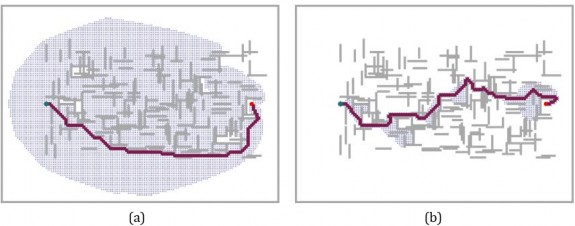
Hình 3.21 Hai tìm kiếm trên cùng một lưới: (a) một tìm kiếm A* và (b) một tìm kiếm A* có
trọng số với trọng số 𝑊 = 2 . Các thanh màu xám là chướng ngại vật, đường màu tím là đường
dẫn từ điểm bắt đầu màu xanh lá cây đến mục tiêu màu đỏ, và các chấm nhỏ là các trạng thái đã
được mỗi tìm kiếm đạt đến. Đối với bài toán cụ thể này, A* có trọng số khám phá ít trạng thái
hơn 7 lần và tìm thấy một đường dẫn có chi phí cao hơn 5%.
Hình 3.21 cho thấy một bài toán tìm kiếm trên một thế giới lưới. Trong (a), một tìm kiếm A* tìm
thấy giải pháp tối ưu, nhưng phải khám phá một phần lớn của không gian trạng thái để tìm thấy
nó. Trong (b), một tìm kiếm A* có trọng số tìm thấy một giải pháp có chi phí cao hơn một chút,
nhưng thời gian tìm kiếm nhanh hơn nhiều. Chúng ta thấy rằng tìm kiếm có trọng số tập trung
đường đồng mức của các trạng thái đã đạt đến về phía một mục tiêu. Điều đó có nghĩa là ít trạng
thái được khám phá hơn, nhưng nếu đường dẫn tối ưu từng đi ra ngoài đường đồng mức của tìm
kiếm có trọng số (như trong trường hợp này), thì đường dẫn tối ưu sẽ không được tìm thấy. Nói
chung, nếu giải pháp tối ưu có chi phí 𝐶∗ , một tìm kiếm A* có trọng số sẽ tìm thấy một giải pháp
có chi phí nằm đâu đó giữa 𝐶∗ và 𝑊 × 𝐶∗ ; nhưng trong thực tế chúng ta thường nhận được kết
quả gần 𝐶∗ hơn nhiều so với 𝑊 × 𝐶∗ . Chúng ta đã xem xét các tìm kiếm đánh giá các trạng thái
bằng cách kết hợp 𝑔 và ℎ theo nhiều cách khác nhau; A* có trọng số có thể được xem là một sự
khái quát hóa của những cái khác:
Tìm kiếm A*: 𝑔(𝑛) + ℎ(𝑛) ( 𝑊 = 1 )
Tìm kiếm chi phí đồng đều: 𝑔(𝑛) ( 𝑊 = 0 )
Tìm kiếm tốt nhất đầu tiên tham lam: ℎ(𝑛) ( 𝑊 = ∞ )
Tìm kiếm A* có trọng số: 𝑔(𝑛) + 𝑊 × ℎ(𝑛) ( 1 < 𝑊 < ∞ )
Bạn có thể gọi A* có trọng số là “tìm kiếm hơi tham lam”: giống như tìm kiếm tốt nhất đầu tiên
tham lam, nó tập trung tìm kiếm về phía một mục tiêu; mặt khác, nó sẽ không bỏ qua chi phí đường
dẫn hoàn toàn và sẽ đình chỉ một đường dẫn đang tiến triển ít với chi phí lớn.
Có nhiều thuật toán tìm kiếm dưới tối ưu khác nhau, có thể được đặc trưng bởi các tiêu chí về
những gì được coi là “đủ tốt”. Trong tìm kiếm dưới tối ưu có giới hạn (bounded suboptimal
search), chúng ta tìm kiếm một giải pháp được đảm bảo nằm trong một hằng số 𝑊 của chi phí tối
ưu. A* có trọng số cung cấp sự đảm bảo này. Trong tìm kiếm chi phí có giới hạn (bounded-cost
search), chúng ta tìm kiếm một giải pháp có chi phí nhỏ hơn một hằng số 𝐶 . Và trong tìm kiếm(unbounded-cost search), chúng ta chấp nhận một giải pháp có bất kỳ
chi phí nào, miễn là chúng ta có thể tìm thấy nó nhanh chóng.
Một ví dụ về thuật toán tìm kiếm chi phí không có giới hạn là tìm kiếm nhanh (speedy search),
là một phiên bản của tìm kiếm tốt nhất đầu tiên tham lam sử dụng làm heuristic số hành động ước
tính cần thiết để đạt đến một mục tiêu, bất kể chi phí của những hành động đó. Do đó, đối với các
bài toán mà tất cả các hành động có cùng chi phí, nó giống như tìm kiếm tốt nhất đầu tiên tham
lam, nhưng khi các hành động có chi phí khác nhau, nó có xu hướng dẫn tìm kiếm tìm thấy một
giải pháp nhanh chóng, ngay cả khi nó có thể có chi phí cao.
Tìm kiếm có giới hạn bộ nhớ
Vấn đề chính với A* là việc sử dụng bộ nhớ của nó. Trong phần này, chúng ta sẽ đề cập đến một
số thủ thuật triển khai giúp tiết kiệm không gian, và sau đó là một số thuật toán hoàn toàn mới tận
dụng tốt hơn không gian có sẵn.
Bộ nhớ được chia giữa biên và các trạng thái đã đạt đến. Trong việc triển khai tìm kiếm tốt nhất
đầu tiên của chúng ta, một trạng thái nằm trên biên được lưu trữ ở hai nơi: là một nút trong biên
(để chúng ta có thể quyết định mở rộng nút nào tiếp theo) và là một mục nhập trong bảng các trạng
thái đã đạt đến (để chúng ta biết liệu chúng ta đã ghé thăm trạng thái đó trước đây chưa). Đối với
nhiều bài toán (chẳng hạn như khám phá một lưới), việc trùng lặp này không phải là một vấn đề,
vì kích thước của biên nhỏ hơn nhiều so với đã đạt đến, vì vậy việc trùng lặp các trạng thái trong
biên đòi hỏi một lượng bộ nhớ tương đối nhỏ. Nhưng một số triển khai chỉ giữ một trạng thái ở
một trong hai nơi, tiết kiệm một chút không gian với chi phí làm phức tạp (và có lẽ làm chậm)
thuật toán.
Một khả năng khác là xóa các trạng thái khỏi đã đạt đến khi chúng ta có thể chứng minh rằng
chúng không còn cần thiết nữa. Đối với một số bài toán, chúng ta có thể sử dụng thuộc tính tách
(separation property) (Hình 3.6 trên trang 90), cùng với việc cấm các hành động quay đầu, để đảm
bảo rằng tất cả các hành động hoặc di chuyển ra ngoài biên hoặc vào một trạng thái biên khác.
Trong trường hợp đó, chúng ta chỉ cần kiểm tra biên để tìm các đường dẫn dư thừa và chúng ta có
thể loại bỏ bảng đã đạt đến.
Đối với các bài toán khác, chúng ta có thể giữ số lượng tham chiếu (reference counts) về số lần
một trạng thái đã được đạt đến và xóa nó khỏi bảng đã đạt đến khi không còn cách nào để đạt đến
trạng thái đó nữa. Ví dụ, trên một thế giới lưới nơi mỗi trạng thái chỉ có thể được đạt đến từ bốn
nút lân cận của nó, một khi chúng ta đã đạt đến một trạng thái bốn lần, chúng ta có thể xóa nó khỏi
bảng.
Bây giờ chúng ta hãy xem xét các thuật toán mới được thiết kế để bảo tồn việc sử dụng bộ nhớ.
𝑘 nút có điểm 𝑓 tốt nhất, loại bỏ bất kỳ nút mở rộng nào khác. Điều này tất nhiên làm cho tìm kiếm
không đầy đủ và dưới tối ưu, nhưng chúng ta có thể chọn 𝑘 để sử dụng tốt bộ nhớ có sẵn và thuật
toán thực thi nhanh vì nó mở rộng ít nút hơn. Đối với nhiều bài toán, nó có thể tìm thấy các giải
pháp tốt gần tối ưu. Bạn có thể nghĩ tìm kiếm chi phí đồng đều hoặc A* là lan ra khắp nơi trong
các đường đồng mức đồng tâm, và nghĩ tìm kiếm chùm tia là chỉ khám phá một phần tập trung của
các đường đồng mức đó, phần chứa 𝑘 ứng cử viên tốt nhất.
Một phiên bản thay thế của tìm kiếm chùm tia không giữ một giới hạn nghiêm ngặt về kích thước
của biên mà thay vào đó giữ mọi nút có điểm 𝑓 nằm trong 𝛿 của điểm 𝑓 tốt nhất. Bằng cách đó,
khi có một vài nút có điểm mạnh, chỉ một vài nút sẽ được giữ lại, nhưng nếu không có nút mạnh
nào, nhiều nút hơn sẽ được giữ lại cho đến khi một nút mạnh xuất hiện.
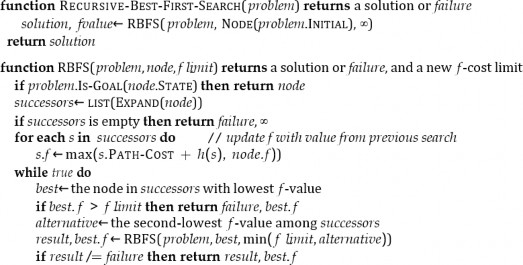
Tìm kiếm A_ lặp sâu dần (IDA_)** (Iterative-deepening A* search) đối với A* cũng giống như
tìm kiếm lặp sâu dần đối với tìm kiếm theo chiều sâu đầu tiên: IDA* mang lại cho chúng ta những
lợi ích của A* mà không yêu cầu giữ tất cả các trạng thái đã đạt đến trong bộ nhớ, với chi phí là
ghé thăm một số trạng thái nhiều lần. Đây là một thuật toán rất quan trọng và thường được sử dụng
cho các bài toán không vừa với bộ nhớ.
Trong tìm kiếm lặp sâu dần tiêu chuẩn, giới hạn là độ sâu, được tăng thêm một mỗi lần lặp. Trong
IDA*, giới hạn là chi phí 𝑓(𝑔 + ℎ) ; ở mỗi lần lặp, giá trị giới hạn là chi phí 𝑓 nhỏ nhất của bất kỳ
nút nào vượt quá giới hạn ở lần lặp trước đó. Nói cách khác, mỗi lần lặp tìm kiếm một cách cạn
kiệt một đường đồng mức 𝑓 , tìm một nút ngay bên ngoài đường đồng mức đó và sử dụng chi phí
𝑓 của nút đó làm đường đồng mức tiếp theo. Đối với các bài toán như 8-puzzle, nơi chi phí 𝑓 của
mỗi đường dẫn là một số nguyên, điều này hoạt động rất tốt, dẫn đến tiến trình ổn định về phía
mục tiêu mỗi lần lặp. Nếu giải pháp tối ưu có chi phí 𝐶∗ , thì không thể có nhiều hơn 𝐶∗ lần lặp
(ví dụ, không quá 31 lần lặp trên các bài toán 8-puzzle khó nhất). Nhưng đối với một bài toán mà
mỗi nút có một chi phí 𝑓 khác nhau, mỗi đường đồng mức mới có thể chỉ chứa một nút mới, và số
lần lặp có thể bằng số trạng thái.
Tìm kiếm tốt nhất đầu tiên đệ quy (RBFS) (Recursive best-first search) (Hình 3.22) cố gắng bắt
chước hoạt động của tìm kiếm tốt nhất đầu tiên tiêu chuẩn, nhưng chỉ sử dụng không gian tuyến
tính. RBFS giống với một tìm kiếm theo chiều sâu đầu tiên đệ quy, nhưng thay vì tiếp tục vô thời
hạn xuống đường dẫn hiện tại, nó sử dụng biến flimit để theo dõi giá trị 𝑓 của đường dẫn thay thế
tốt nhất có sẵn từ bất kỳ tổ tiên nào của nút hiện tại. Nếu nút hiện tại vượt quá giới hạn này, đệ quy
sẽ quay lại đường dẫn thay thế. Khi đệ quy quay lại, RBFS thay thế giá trị 𝑓 của mỗi nút dọc theo
đường dẫn bằng một giá trị được sao lưu (backed-up value)—giá trị 𝑓 tốt nhất của các nút con
của nó. Bằng cách này, RBFS ghi nhớ giá trị 𝑓 của lá tốt nhất trong cây con bị lãng quên và do đó
có thể quyết định xem có đáng để mở rộng lại cây con đó vào một thời điểm sau đó hay không.
Hình 3.23 cho thấy cách RBFS đến Bucharest. RBFS hiệu quả hơn một chút so với IDA*, nhưng
vẫn bị tái tạo nút quá mức. Trong ví dụ trong Hình 3.23, RBFS đi theo đường dẫn qua Rimnicu
Vilcea, sau đó “thay đổi ý định” và thử Fagaras, và sau đó lại thay đổi ý định trở lại. Những thay
đổi ý định này xảy ra bởi vì mỗi khi đường dẫn tốt nhất hiện tại được mở rộng, giá trị 𝑓 của nó có
khả năng tăng lên— ℎ thường ít lạc quan hơn đối với các nút gần mục tiêu hơn. Khi điều này xảy
ra, đường dẫn tốt thứ hai có thể trở thành đường dẫn tốt nhất, vì vậy tìm kiếm phải quay lui để đi
theo nó. Mỗi thay đổi ý định tương ứng với một lần lặp của IDA* và có thể yêu cầu nhiều lần tái
mở rộng các nút bị lãng quên để tạo lại đường dẫn tốt nhất và mở rộng nó thêm một nút nữa.
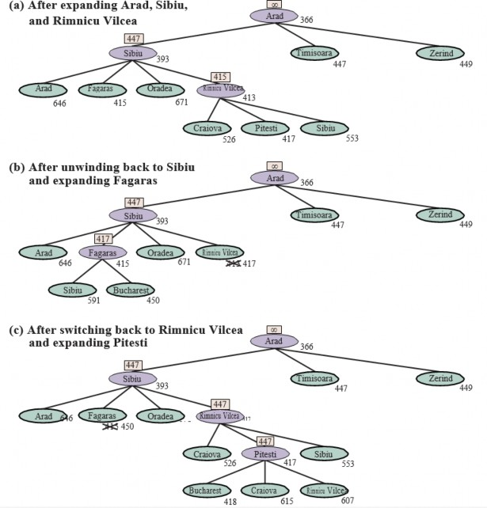
Hình 3.23 Các giai đoạn trong một tìm kiếm RBFS cho tuyến đường ngắn nhất đến Bucharest.
Giá trị giới hạn 𝑓 cho mỗi lời gọi đệ quy được hiển thị trên mỗi nút hiện tại, và mỗi nút được gắn
nhãn với chi phí 𝑓 của nó. (a) Đường dẫn qua Rimnicu Vilcea được đi theo cho đến khi lá tốt nhất
hiện tại (Pitesti) có giá trị tệ hơn đường dẫn thay thế tốt nhất (Fagaras). (b) Đệ quy quay lại và giá
trị lá tốt nhất của cây con bị lãng quên (417) được sao lưu đến Rimnicu Vilcea; sau đó Fagaras
được mở rộng, tiết lộ một giá trị lá tốt nhất là 450. (c) Đệ quy quay lại và giá trị lá tốt nhất của cây
con bị lãng quên (450) được sao lưu đến Fagaras; sau đó Rimnicu Vilcea được mở rộng. Lần này,
vì đường dẫn thay thế tốt nhất (qua Timisoara) có chi phí ít nhất là 447, việc mở rộng tiếp tục đến
Bucharest.
RBFS là tối ưu nếu hàm heuristic ℎ(𝑛) là chấp nhận được. Độ phức tạp không gian của nó là tuyến
tính theo độ sâu của giải pháp tối ưu sâu nhất, nhưng độ phức tạp thời gian của nó khá khó để đặc
trưng: nó phụ thuộc cả vào độ chính xác của hàm heuristic và tần suất đường dẫn tốt nhất thay đổi
khi các nút được mở rộng. Nó mở rộng các nút theo thứ tự chi phí 𝑓 tăng dần, ngay cả khi 𝑓 không
đơn điệu.
IDA* và RBFS gặp vấn đề do sử dụng quá ít bộ nhớ. Giữa các lần lặp, IDA* chỉ giữ lại một số
duy nhất: giới hạn chi phí 𝑓 hiện tại. RBFS giữ lại nhiều thông tin hơn trong bộ nhớ, nhưng nó chỉ
sử dụng không gian tuyến tính: ngay cả khi có nhiều bộ nhớ hơn, RBFS không có cách nào để sử
dụng nó. Vì chúng quên hầu hết những gì chúng đã làm, cả hai thuật toán có thể kết thúc việc khám
phá lại cùng một trạng thái nhiều lần.
Do đó, có vẻ hợp lý khi xác định chúng ta có bao nhiêu bộ nhớ, và cho phép một thuật toán sử
dụng tất cả bộ nhớ đó. Hai thuật toán làm điều này là MA* (memory-bounded A*) và SMA*
(simplified MA*). SMA* — tốt — đơn giản hơn, vì vậy chúng ta sẽ mô tả nó. SMA* tiến hành
giống như A*, mở rộng lá tốt nhất cho đến khi bộ nhớ đầy. Tại thời điểm này, nó không thể thêm
một nút mới vào cây tìm kiếm mà không bỏ một nút cũ. SMA* luôn bỏ nút lá tệ nhất—nút có giá
trị 𝑓 cao nhất. Giống như RBFS, SMA* sau đó sao lưu giá trị của nút bị lãng quên đến nút cha của
nó. Bằng cách này, tổ tiên của một cây con bị lãng quên biết được chất lượng của đường dẫn tốt
nhất trong cây con đó. Với thông tin này, SMA* chỉ tạo lại cây con khi tất cả các đường dẫn khác
đã được chứng minh là trông tệ hơn đường dẫn mà nó đã quên. Một cách khác để nói điều này là
nếu tất cả các hậu duệ của một nút 𝑛 bị lãng quên, thì chúng ta sẽ không biết phải đi đường nào từ
𝑛 , nhưng chúng ta vẫn sẽ có ý tưởng về mức độ đáng giá để đi bất cứ đâu từ 𝑛 .
Thuật toán hoàn chỉnh được mô tả trong kho mã trực tuyến đi kèm với cuốn sách này. Có một
điểm tinh tế đáng nói. Chúng ta đã nói rằng SMA* mở rộng lá tốt nhất và xóa lá tệ nhất. Điều gì
sẽ xảy ra nếu tất cả các nút lá đều có cùng giá trị 𝑓 ? Để tránh chọn cùng một nút để xóa và mở
rộng, SMA* mở rộng lá tốt nhất mới nhất và xóa lá tệ nhất cũ nhất. Những điều này trùng nhau
khi chỉ có một lá, nhưng trong trường hợp đó, cây tìm kiếm hiện tại phải là một đường dẫn duy
nhất từ gốc đến lá lấp đầy toàn bộ bộ nhớ. Nếu lá không phải là nút mục tiêu, thì ngay cả khi nó
nằm trên một đường dẫn giải pháp tối ưu, giải pháp đó không thể đạt được với bộ nhớ có sẵn. Do
đó, nút có thể bị loại bỏ chính xác như thể nó không có nút kế tiếp.
SMA* là đầy đủ nếu có bất kỳ giải pháp nào có thể đạt được—tức là, nếu 𝑑 , độ sâu của nút mục
tiêu nông nhất, nhỏ hơn kích thước bộ nhớ (được biểu thị bằng các nút). Nó là tối ưu nếu bất kỳ
giải pháp tối ưu nào có thể đạt được; nếu không, nó trả về giải pháp tốt nhất có thể đạt được. Trong
thực tế, SMA* là một lựa chọn khá mạnh mẽ để tìm các giải pháp tối ưu, đặc biệt là khi không
gian trạng thái là một đồ thị, chi phí hành động không đồng nhất và việc tạo nút tốn kém so với
chi phí duy trì biên và tập hợp đã đạt đến.
Tuy nhiên, trên các bài toán rất khó, thường thì SMA* sẽ bị buộc phải liên tục chuyển đổi qua lại
giữa nhiều đường dẫn giải pháp ứng cử viên, chỉ một tập hợp con nhỏ trong số đó có thể vừa với
bộ nhớ. (Điều này giống với vấn đề thrashing trong các hệ thống phân trang đĩa.) Khi đó, thời
gian bổ sung cần thiết cho việc tái tạo lặp đi lặp lại cùng một nút có nghĩa là các bài toán có thể
giải quyết được trên thực tế bằng A*, với bộ nhớ không giới hạn, trở nên không thể giải quyết
được đối với SMA*. Tức là, các giới hạn bộ nhớ có thể làm cho một bài toán trở nên không thể
giải quyết được từ quan điểm của thời gian tính toán. Mặc dù không có lý thuyết hiện tại nào giải
thích sự đánh đổi giữa thời gian và bộ nhớ, dường như đây là một vấn đề không thể tránh khỏi.
Cách thoát duy nhất là từ bỏ yêu cầu tối ưu.
Tìm kiếm heuristic hai chiều
Với tìm kiếm tốt nhất đầu tiên một chiều, chúng ta đã thấy rằng việc sử dụng 𝑓(𝑛) = 𝑔(𝑛) + ℎ(𝑛)
làm hàm đánh giá cho chúng ta một tìm kiếm A* được đảm bảo tìm thấy các giải pháp có chi phí
tối ưu (giả sử ℎ là chấp nhận được) trong khi vẫn hiệu quả tối ưu về số nút được mở rộng.
Với tìm kiếm tốt nhất đầu tiên hai chiều, chúng ta cũng có thể thử sử dụng 𝑓(𝑛) = 𝑔(𝑛) + ℎ(𝑛) ,
nhưng thật không may, không có gì đảm bảo rằng điều này sẽ dẫn đến một giải pháp có chi phí tối
ưu, cũng như không hiệu quả tối ưu, ngay cả với một heuristic chấp nhận được. Với tìm kiếm hai
chiều, hóa ra không phải các nút riêng lẻ mà là các cặp nút (một từ mỗi biên) có thể được chứng
minh là chắc chắn được mở rộng, vì vậy bất kỳ bằng chứng nào về hiệu quả sẽ phải xem xét các
cặp nút (Eckerle et al., 2017).
Chúng ta sẽ bắt đầu với một số ký hiệu mới. Chúng ta sử dụng 𝑓𝐹(𝑛) = 𝑔𝐹(𝑛) + ℎ𝐹(𝑛) cho các
nút đi theo hướng tiến (với trạng thái ban đầu là gốc) và 𝑓𝐵(𝑛) = 𝑔𝐵(𝑛) + ℎ𝐵(𝑛) cho các nút đi
theo hướng lùi (với một trạng thái mục tiêu là gốc). Mặc dù cả tìm kiếm tiến và lùi đều đang giải
quyết cùng một vấn đề, chúng có các hàm đánh giá khác nhau vì, ví dụ, các heuristic khác nhau
tùy thuộc vào việc bạn đang cố gắng đạt được mục tiêu hay trạng thái ban đầu. Chúng ta sẽ giả sử
các heuristic là chấp nhận được.
Xem xét một đường dẫn tiến từ trạng thái ban đầu đến một nút 𝑚 và một đường dẫn lùi từ mục
tiêu đến một nút 𝑛 . Chúng ta có thể định nghĩa một cận dưới về chi phí của một giải pháp đi theo
đường dẫn từ trạng thái ban đầu đến 𝑚 , sau đó bằng cách nào đó đến 𝑛 , sau đó đi theo đường dẫn
đến mục tiêu là:
𝑙𝑏(𝑚, 𝑛) = 𝑚𝑎𝑥(𝑔𝐹(𝑚) + 𝑔𝐵(𝑛), 𝑓𝐹(𝑚), 𝑓𝐵(𝑛))
Nói cách khác, chi phí của một đường dẫn như vậy phải ít nhất là tổng chi phí đường dẫn của hai
phần (vì kết nối còn lại giữa chúng phải có chi phí không âm), và chi phí cũng phải ít nhất bằng
chi phí 𝑓 ước tính của một trong hai phần (vì các ước tính heuristic là lạc quan). Theo đó, định lý
là đối với bất kỳ cặp nút 𝑚, 𝑛 nào có 𝑙𝑏(𝑚, 𝑛) nhỏ hơn chi phí tối ưu 𝐶∗ , chúng ta phải mở rộng
hoặc 𝑚 hoặc 𝑛 , bởi vì đường dẫn đi qua cả hai chúng là một giải pháp tối ưu tiềm năng. Khó khăn
là chúng ta không biết chắc chắn nút nào là tốt nhất để mở rộng, và do đó không có thuật toán tìm
kiếm hai chiều nào có thể được đảm bảo là hiệu quả tối ưu—bất kỳ thuật toán nào cũng có thể mở
rộng lên đến gấp đôi số nút tối thiểu nếu nó luôn chọn thành viên sai của một cặp để mở rộng
trước. Một số thuật toán tìm kiếm heuristic hai chiều quản lý rõ ràng một hàng đợi các cặp (𝑚, 𝑛)
, nhưng chúng ta sẽ gắn bó với tìm kiếm tốt nhất đầu tiên hai chiều (Hình 3.14), có hai hàng đợi
ưu tiên biên và đưa cho nó một hàm đánh giá bắt chước tiêu chí 𝑙𝑏 :
𝑓2(𝑛) = 𝑚𝑎𝑥(2𝑔(𝑛), 𝑔(𝑛) + ℎ(𝑛))
Nút được mở rộng tiếp theo sẽ là nút giảm thiểu giá trị 𝑓2 này; nút có thể đến từ một trong hai biên.
Hàm 𝑓2 này đảm bảo rằng chúng ta sẽ không bao giờ mở rộng một nút (từ bất kỳ biên nào) với
𝑔(𝑛) > 𝐶∗ . Chúng ta nói rằng hai nửa của tìm kiếm “gặp nhau ở giữa” theo nghĩa là khi hai biên
chạm vào nhau, không có nút nào bên trong một trong hai biên có chi phí đường dẫn lớn hơn giới
hạn 𝐶∗ . Hình 3.24 giải thích một ví dụ về tìm kiếm hai chiều.
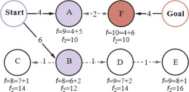
Hình 3.24 Tìm kiếm hai chiều duy trì hai biên: ở bên trái, các nút A và B là các nút kế tiếp của
Bắt đầu; ở bên phải, nút F là một nút kế tiếp ngược của Mục tiêu. Mỗi nút được gắn nhãn với các
giá trị 𝑓 = 𝑔 + ℎ và giá trị 𝑓2 = 𝑚𝑎𝑥(2𝑔, 𝑔 + ℎ) . (Các giá trị 𝑔 là tổng của các chi phí hành động
như được hiển thị trên mỗi mũi tên; các giá trị ℎ là tùy ý và không thể suy ra từ bất cứ điều gì trong
hình.) Giải pháp tối ưu, Bắt đầu-A-F-Mục tiêu, có chi phí 𝐶∗ = 4 + 2 + 4 = 10 , vì vậy điều đó
có nghĩa là một thuật toán hai chiều gặp nhau ở giữa không nên mở rộng bất kỳ nút nào có 𝑔 >
𝐶∗ = 5 ; và quả thực nút tiếp theo được mở rộng sẽ là A hoặc F (mỗi nút có 𝑔 = 4 ), dẫn chúng ta
đến một giải pháp tối ưu. Nếu chúng ta mở rộng nút có chi phí 𝑓 thấp nhất trước, thì B và C sẽ đến
tiếp theo, và D và E sẽ bằng A, nhưng tất cả chúng đều có 𝑔 > 𝐶∗ và do đó không bao giờ được
mở rộng khi 𝑓2 là hàm đánh giá.
Chúng ta đã mô tả một cách tiếp cận trong đó heuristic ℎ𝐹 ước tính khoảng cách đến mục tiêu
(hoặc, khi bài toán có nhiều trạng thái mục tiêu, khoảng cách đến mục tiêu gần nhất) và ℎ𝐵 ước
tính khoảng cách đến điểm bắt đầu. Đây được gọi là tìm kiếm từ đầu đến cuối (front-to-end
search). Một cách thay thế, được gọi là tìm kiếm từ biên đến biên (front-to-front search), cố gắng
ước tính khoảng cách đến biên kia. Rõ ràng, nếu một biên có hàng triệu nút, sẽ không hiệu quả khi
áp dụng hàm heuristic cho tất cả chúng và lấy giá trị nhỏ nhất. Nhưng nó có thể hoạt động để lấy
mẫu một vài nút từ biên. Trong một số miền bài toán cụ thể, có thể tóm tắt biên—ví dụ, trong một
bài toán tìm kiếm lưới, chúng ta có thể tính toán một hộp giới hạn của biên một cách gia tăng và
sử dụng khoảng cách đến hộp giới hạn làm heuristic.
Tìm kiếm hai chiều đôi khi hiệu quả hơn tìm kiếm một chiều, đôi khi không. Nói chung, nếu chúng
ta có một heuristic rất tốt, thì tìm kiếm A* tạo ra các đường đồng mức tìm kiếm tập trung vào mục
tiêu, và việc thêm tìm kiếm hai chiều không giúp ích nhiều. Với một heuristic trung bình, tìm kiếm
hai chiều gặp nhau ở giữa có xu hướng mở rộng ít nút hơn và được ưu tiên. Trong trường hợp xấu
nhất của một heuristic kém, tìm kiếm không còn tập trung vào mục tiêu, và tìm kiếm hai chiều có
độ phức tạp tiệm cận tương tự như A*. Tìm kiếm hai chiều với hàm đánh giá 𝑓2 và một heuristic
ℎ chấp nhận được là đầy đủ và tối ưu.
Các hàm Heuristic
Trong phần này, chúng ta xem xét cách độ chính xác của một heuristic ảnh hưởng đến hiệu suất
tìm kiếm và cũng xem xét cách các heuristic có thể được phát minh. Là ví dụ chính, chúng ta sẽ
quay lại 8-puzzle. Như đã đề cập trong Phần 3.2, mục tiêu của trò chơi xếp hình là trượt các ô
vuông theo chiều ngang hoặc chiều dọc vào khoảng trống cho đến khi cấu hình khớp với cấu hình
mục tiêu (Hình 3.25).
Có 9!/2 = 181,400 trạng thái có thể đạt được trong một 8-puzzle, vì vậy một tìm kiếm có thể dễ
dàng giữ tất cả chúng trong bộ nhớ. Nhưng đối với 15-puzzle, có 16!/2 trạng thái—hơn 10 nghìn
tỷ—vì vậy để tìm kiếm không gian đó, chúng ta sẽ cần sự trợ giúp của một hàm heuristic chấp
nhận được tốt. Có một lịch sử lâu dài về các heuristic như vậy cho 15-puzzle; dưới đây là hai ứng
cử viên thường được sử dụng:
** ℎ1 = số ô sai vị trí** (không bao gồm ô trống). Đối với Hình 3.25, cả tám ô đều sai vị
trí, vì vậy trạng thái bắt đầu có ℎ1 = 8 . ℎ1 là một heuristic chấp nhận được vì bất kỳ ô nào
sai vị trí sẽ yêu cầu ít nhất một lần di chuyển để đưa nó đến đúng vị trí.
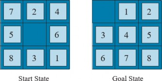
** ℎ2 = tổng khoảng cách của các ô so với vị trí mục tiêu của chúng. Vì các ô không thể
di chuyển theo đường chéo, khoảng cách là tổng của khoảng cách ngang và dọc—đôi
khi được gọi là khoảng cách khối thành phố** (city-block distance) hoặc khoảng cách
Manhattan (Manhattan distance). ℎ2 cũng chấp nhận được vì tất cả những gì một lần di
chuyển có thể làm là di chuyển một ô tiến gần hơn một bước đến mục tiêu. Các ô từ 1 đến
8 trong trạng thái bắt đầu của Hình 3.25 cho khoảng cách Manhattan là: ℎ2 = 3 + 1 + 2 +
2 + 2 + 3 + 3 + 2 = 18 Như mong đợi, không có heuristic nào trong số này ước tính quá
cao chi phí giải pháp thực sự, là 26.
Ảnh hưởng của độ chính xác heuristic đến hiệu suất
Một cách để mô tả chất lượng của một heuristic là hệ số phân nhánh hiệu quả 𝑏∗ . Nếu tổng số
nút được tạo ra bởi A* cho một bài toán cụ thể là 𝑁 và độ sâu giải pháp là 𝑑 , thì 𝑏∗ là hệ số phân
nhánh mà một cây đồng nhất có độ sâu 𝑑 sẽ phải có để chứa 𝑁 + 1 nút. Do đó,
𝑁 + 1 = 1 + 𝑏∗ + (𝑏∗)2+. . . +(𝑏∗)𝑑
Ví dụ, nếu A* tìm thấy một giải pháp ở độ sâu 5 sử dụng 52 nút, thì hệ số phân nhánh hiệu quả là
1.92. Hệ số phân nhánh hiệu quả có thể thay đổi tùy theo các trường hợp bài toán, nhưng thường
đối với một miền cụ thể (chẳng hạn như 8-puzzles), nó khá ổn định trên tất cả các trường hợp bài
toán không tầm thường. Do đó, các phép đo thực nghiệm của 𝑏∗ trên một tập hợp nhỏ các bài toán
có thể cung cấp một hướng dẫn tốt về tính hữu ích tổng thể của heuristic. Một heuristic được thiết
kế tốt sẽ có giá trị 𝑏∗ gần 1, cho phép các bài toán khá lớn được giải quyết với chi phí tính toán
hợp lý. Korf và Reid (1998) lập luận rằng một cách tốt hơn để mô tả ảnh hưởng của việc cắt tỉa
A* với một heuristic ℎ đã cho là nó làm giảm độ sâu hiệu quả (effective depth) bằng một hằng số
𝑘ℎ so với độ sâu thực tế. Điều này có nghĩa là tổng chi phí tìm kiếm là 𝑂(𝑏𝑑−𝑘ℎ) so với 𝑂(𝑏𝑑) đối
với một tìm kiếm không có thông tin. Các thí nghiệm của họ trên Rubik’s Cube và các bài toán n-
puzzle cho thấy rằng công thức này đưa ra các dự đoán chính xác cho tổng chi phí tìm kiếm cho
các trường hợp bài toán được lấy mẫu trên một phạm vi rộng các độ dài giải pháp—ít nhất là đối
với các độ dài giải pháp lớn hơn 𝑘ℎ .
Đối với Hình 3.26, chúng tôi đã tạo các bài toán 8-puzzle ngẫu nhiên và giải chúng bằng tìm kiếm
theo chiều rộng đầu tiên không có thông tin và với tìm kiếm A* sử dụng cả ℎ1 và ℎ2 , báo cáo số
nút trung bình được tạo ra và hệ số phân nhánh hiệu quả tương ứng cho mỗi chiến lược tìm kiếm
và cho mỗi độ dài giải pháp. Kết quả cho thấy ℎ2 tốt hơn ℎ1 và cả hai đều tốt hơn so với không có
heuristic nào cả.
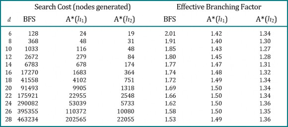
Hình 3.26 So sánh chi phí tìm kiếm và hệ số phân nhánh hiệu quả cho các bài toán 8-puzzle sử
dụng tìm kiếm theo chiều rộng đầu tiên, A* với ℎ1 (các ô sai vị trí) và A* với ℎ2 (khoảng cách
Manhattan). Dữ liệu được lấy trung bình trên 100 câu đố cho mỗi độ dài giải pháp 𝑑 từ 6 đến 28.
Người ta có thể hỏi liệu ℎ2 có luôn tốt hơn ℎ1 hay không. Câu trả lời là “Về cơ bản là có.” Dễ dàng
thấy từ các định nghĩa của hai heuristic rằng đối với bất kỳ nút 𝑛 nào, ℎ2(𝑛) ≥ ℎ1(𝑛) . Do đó,
chúng ta nói rằng ℎ2 thống trị (dominates) ℎ1 . Sự thống trị này chuyển trực tiếp thành hiệu quả:
A* sử dụng ℎ2 sẽ không bao giờ mở rộng nhiều nút hơn A* sử dụng ℎ1 (ngoại trừ trong trường
hợp không may mắn phá vỡ sự cân bằng). Lập luận rất đơn giản. Nhớ lại quan sát trên trang 108
rằng mọi nút có 𝑓(𝑛) < 𝐶∗ chắc chắn sẽ được mở rộng. Điều này giống như nói rằng mọi nút có
ℎ(𝑛) < 𝐶∗ − 𝑔(𝑛) chắc chắn được mở rộng khi ℎ nhất quán. Nhưng vì ℎ2 lớn ít nhất bằng ℎ1 đối
với tất cả các nút, mọi nút chắc chắn được mở rộng bởi tìm kiếm A* với ℎ2 cũng chắc chắn được
mở rộng với ℎ1 , và ℎ1 có thể khiến các nút khác cũng được mở rộng. Do đó, nhìn chung tốt hơn
là sử dụng một hàm heuristic có giá trị cao hơn, miễn là nó nhất quán và thời gian tính toán cho
heuristic không quá dài.
Tạo Heuristic từ các bài toán đã được nới lỏng
Chúng ta đã thấy rằng cả ℎ1 (số ô sai vị trí) và ℎ2 (khoảng cách Manhattan) đều là các heuristic
khá tốt cho 8-puzzle và ℎ2 thì tốt hơn. Làm thế nào người ta có thể nghĩ ra ℎ2 ? Liệu một máy tính
có thể tự động phát minh ra một heuristic như vậy không?
ℎ1 và ℎ2 là các ước tính về độ dài đường dẫn còn lại cho 8-puzzle, nhưng chúng cũng là độ dài
đường dẫn hoàn toàn chính xác cho các phiên bản đơn giản hóa của câu đố. Nếu các quy tắc của
câu đố được thay đổi sao cho một ô có thể di chuyển đến bất cứ đâu thay vì chỉ đến ô trống liền
kề, thì ℎ1 sẽ đưa ra độ dài chính xác của giải pháp ngắn nhất. Tương tự, nếu một ô có thể di chuyển
một ô theo bất kỳ hướng nào, ngay cả trên một ô đã có người, thì ℎ2 sẽ đưa ra độ dài chính xác
của giải pháp ngắn nhất. Một bài toán có ít hạn chế hơn về các hành động được gọi là một bài toán
đã được nới lỏng (relaxed problem). Đồ thị không gian trạng thái của bài toán đã được nới lỏng
là một siêu đồ thị của không gian trạng thái ban đầu vì việc loại bỏ các hạn chế tạo ra các cạnh bổ
sung trong đồ thị.
Vì bài toán đã được nới lỏng thêm các cạnh vào đồ thị không gian trạng thái, nên bất kỳ giải pháp
tối ưu nào trong bài toán gốc, theo định nghĩa, cũng là một giải pháp trong bài toán đã được nới
lỏng; nhưng bài toán đã được nới lỏng có thể có các giải pháp tốt hơn nếu các cạnh được thêm vào
cung cấp các lối tắt. Do đó, chi phí của một giải pháp tối ưu cho một bài toán đã được nới lỏng là
một heuristic chấp nhận được cho bài toán gốc. Hơn nữa, vì heuristic được suy ra là một chi phí
chính xác cho bài toán đã được nới lỏng, nó phải tuân theo bất đẳng thức tam giác và do đó là nhất
quán (xem trang 106).
Nếu một định nghĩa bài toán được viết bằng một ngôn ngữ hình thức, có thể tự động xây dựng các
bài toán đã được nới lỏng. Ví dụ, nếu các hành động của 8-puzzle được mô tả là: Một ô có thể di
chuyển từ ô X đến ô Y nếu X liền kề với Y và Y trống. Chúng ta có thể tạo ra ba bài toán đã được nới
lỏng bằng cách loại bỏ một hoặc cả hai điều kiện: (a) Một ô có thể di chuyển từ ô X đến ô Y nếu
X liền kề với Y. (b) Một ô có thể di chuyển từ ô X đến ô Y nếu Y trống. (c) Một ô có thể di chuyển
từ ô X đến ô Y.
Từ (a), chúng ta có thể suy ra ℎ2 (khoảng cách Manhattan). Lập luận là ℎ2 sẽ là điểm số thích hợp
nếu chúng ta lần lượt di chuyển từng ô đến đích của nó. Heuristic được suy ra từ (b) được thảo
luận trong Bài tập 3.GASC. Từ (c), chúng ta có thể suy ra ℎ1 (các ô sai vị trí) vì nó sẽ là điểm số
thích hợp nếu các ô có thể di chuyển đến đích dự định của chúng trong một hành động. Lưu ý rằng
điều quan trọng là các bài toán đã được nới lỏng được tạo ra bằng kỹ thuật này có thể được giải
quyết về cơ bản mà không cần tìm kiếm, bởi vì các quy tắc nới lỏng cho phép bài toán được phân
tách thành tám bài toán con (subproblem) độc lập. Nếu bài toán đã được nới lỏng khó giải quyết,
thì các giá trị của heuristic tương ứng sẽ tốn kém để có được.
Một chương trình có tên ABSOLVER có thể tự động tạo ra các heuristic từ các định nghĩa bài
toán, sử dụng phương pháp “bài toán đã được nới lỏng” và các kỹ thuật khác nhau (Prieditis, 1993).
ABSOLVER đã tạo ra một heuristic mới cho 8-puzzle tốt hơn bất kỳ heuristic hiện có nào và tìm
thấy heuristic hữu ích đầu tiên cho câu đố Rubik’s Cube nổi tiếng.
Nếu một bộ sưu tập các heuristic chấp nhận được ℎ1. . . ℎ𝑚 có sẵn cho một bài toán và không có
heuristic nào trong số chúng rõ ràng là tốt hơn những heuristic khác, chúng ta nên chọn cái nào?
Hóa ra, chúng ta có thể có điều tốt nhất của tất cả các thế giới, bằng cách định nghĩa:
$h\left(n\right)=max\left{h_{1}\left(n\right),...,h_{k}\left(n\right)\right}$ . Heuristic tổng hợp
này chọn hàm nào chính xác nhất trên nút đang được xem xét. Vì các thành phần ℎ𝑖 là chấp nhận
được, ℎ là chấp nhận được (và nếu tất cả ℎ𝑖 đều nhất quán, ℎ là nhất quán). Hơn nữa, ℎ thống trị
(dominates) tất cả các heuristic thành phần của nó. Nhược điểm duy nhất là ℎ(𝑛) mất nhiều thời
gian hơn để tính toán. Nếu đó là một vấn đề, một lựa chọn thay thế là chọn ngẫu nhiên một trong
các heuristic ở mỗi lần đánh giá hoặc sử dụng một thuật toán học máy để dự đoán heuristic nào sẽ
tốt nhất. Làm như vậy có thể dẫn đến một heuristic không nhất quán (ngay cả khi mọi ℎ𝑖 đều nhất
quán), nhưng trong thực tế, nó thường dẫn đến việc giải quyết vấn đề nhanh hơn.
Tạo Heuristic từ các bài toán con: Cơ sở dữ liệu mẫu
Các heuristic chấp nhận được cũng có thể được suy ra từ chi phí giải pháp của một bài toán con
của một bài toán đã cho. Ví dụ, Hình 3.27 cho thấy một bài toán con của trường hợp 8-puzzle trong
Hình 3.25. Bài toán con này liên quan đến việc đưa các ô 1, 2, 3, 4 và ô trống vào đúng vị trí của
chúng. Rõ ràng, chi phí của giải pháp tối ưu của bài toán con này là một cận dưới về chi phí của
bài toán hoàn chỉnh. Nó hóa ra chính xác hơn khoảng cách Manhattan trong một số trường hợp.
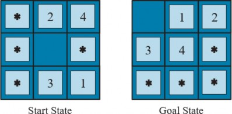
Ý tưởng đằng sau cơ sở dữ liệu mẫu (pattern databases) là lưu trữ các chi phí giải pháp chính xác
này cho mọi trường hợp bài toán con có thể có—trong ví dụ của chúng ta, mọi cấu hình có thể có
của bốn ô và ô trống. (Sẽ có 9 × 8 × 7 × 6 × 5 = 15,120 mẫu trong cơ sở dữ liệu. Danh tính của
bốn ô khác không liên quan cho mục đích giải quyết bài toán con, nhưng các bước di chuyển của
các ô đó có tính vào chi phí giải pháp của bài toán con.) Sau đó, chúng ta tính toán một heuristic
chấp nhận được ℎ𝐷𝐵 cho mỗi trạng thái gặp phải trong quá trình tìm kiếm chỉ bằng cách tra cứu
cấu hình bài toán con tương ứng trong cơ sở dữ liệu. Bản thân cơ sở dữ liệu được xây dựng bằng
cách tìm kiếm ngược từ mục tiêu và ghi lại chi phí của mỗi mẫu mới gặp phải; chi phí của tìm
kiếm này được khấu hao trên các trường hợp bài toán tiếp theo và do đó có ý nghĩa nếu chúng ta
mong đợi được yêu cầu giải quyết nhiều bài toán.
Việc chọn các ô 1-2-3-4 đi cùng với ô trống là khá tùy ý; chúng ta cũng có thể xây dựng cơ sở dữ
liệu cho 5-6-7-8, cho 2-4-6-8, v.v. Mỗi cơ sở dữ liệu mang lại một heuristic chấp nhận được, và
các heuristic này có thể được kết hợp, như đã giải thích trước đó, bằng cách lấy giá trị tối đa. Một
heuristic kết hợp loại này chính xác hơn nhiều so với khoảng cách Manhattan; số nút được tạo ra
khi giải quyết các 15-puzzle ngẫu nhiên có thể giảm đi 1000 lần. Tuy nhiên, với mỗi cơ sở dữ liệu
bổ sung, có những lợi ích giảm dần và tăng chi phí bộ nhớ và tính toán.
Người ta có thể tự hỏi liệu các heuristic thu được từ cơ sở dữ liệu 1-2-3-4 và 5-6-7-8 có thể được
cộng lại không, vì hai bài toán con dường như không chồng chéo. Liệu điều này vẫn cho một
heuristic chấp nhận được không? Câu trả lời là không, bởi vì các giải pháp của bài toán con 1-2-
3-4 và bài toán con 5-6-7-8 cho một trạng thái nhất định gần như chắc chắn sẽ chia sẻ một số bước
di chuyển—rất khó có khả năng 1-2-3-4 có thể được di chuyển vào vị trí mà không chạm vào 5-6-
7-8, và ngược lại. Nhưng nếu chúng ta không đếm những bước di chuyển đó thì sao—nếu chúng
ta không trừu tượng hóa các ô khác thành các ngôi sao, mà thay vào đó làm cho chúng biến mất
thì sao? Tức là, chúng ta không ghi lại tổng chi phí giải quyết bài toán con 1-2-3-4, mà chỉ là số
lần di chuyển liên quan đến 1-2-3-4. Sau đó, tổng của hai chi phí vẫn là một cận dưới về chi phí
giải quyết toàn bộ bài toán. Đây là ý tưởng đằng sau cơ sở dữ liệu mẫu rời rạc (disjoint pattern
databases). Với các cơ sở dữ liệu như vậy, có thể giải quyết các 15-puzzle ngẫu nhiên trong vài
mili giây—số nút được tạo ra giảm đi 10,000 lần so với việc sử dụng khoảng cách Manhattan. Đối
với 24-puzzles, có thể đạt được tốc độ tăng lên khoảng một triệu lần. Cơ sở dữ liệu mẫu rời rạc
hoạt động cho các câu đố trượt ô vì bài toán có thể được chia nhỏ theo cách mà mỗi lần di chuyển
chỉ ảnh hưởng đến một bài toán con—vì chỉ có một ô được di chuyển tại một thời điểm.
Tạo Heuristic bằng các điểm mốc
Có các dịch vụ trực tuyến lưu trữ bản đồ với hàng chục triệu đỉnh và tìm chỉ đường lái xe với chi
phí tối ưu trong vài mili giây (Hình 3.28). Làm thế nào họ có thể làm điều đó, khi các thuật toán
tìm kiếm tốt nhất mà chúng ta đã xem xét cho đến nay chậm hơn khoảng một triệu lần? Có nhiều
thủ thuật, nhưng thủ thuật quan trọng nhất là tính toán trước (precomputation) một số chi phí
đường dẫn tối ưu. Mặc dù việc tính toán trước có thể tốn thời gian, nhưng nó chỉ cần được thực
hiện một lần, và sau đó có thể được khấu hao trên hàng tỷ yêu cầu tìm kiếm của người dùng.
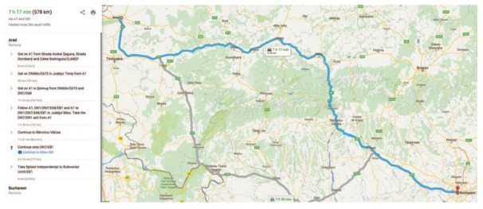
Chúng ta có thể tạo ra một heuristic hoàn hảo bằng cách tính toán trước và lưu trữ chi phí của
đường dẫn tối ưu giữa mọi cặp đỉnh. Điều đó sẽ tốn không gian 𝑂(∣ 𝑉 ∣2) và thời gian 𝑂(∣ 𝐸 ∣3)
—thực tế đối với các đồ thị có 10 nghìn đỉnh, nhưng không phải 10 triệu.
Một cách tiếp cận tốt hơn là chọn một vài (có lẽ 10 hoặc 20) điểm mốc (landmark point) từ các
đỉnh. Sau đó, đối với mỗi điểm mốc 𝐿 và đối với mỗi đỉnh 𝑣 khác trong đồ thị, chúng ta tính toán
và lưu trữ 𝐶∗(𝑣, 𝐿) , chi phí chính xác của đường dẫn tối ưu từ 𝑣 đến 𝐿 . (Chúng ta cũng cần
𝐶∗(𝐿, 𝑣) ; trên một đồ thị vô hướng, điều này giống như 𝐶∗(𝑣, 𝐿) ; trên một đồ thị có hướng—ví
dụ, với các đường một chiều—chúng ta cần tính toán điều này một cách riêng biệt.) Với các bảng
𝐶∗ đã được lưu trữ, chúng ta có thể dễ dàng tạo ra một heuristic hiệu quả (mặc dù không chấp nhận
được): giá trị nhỏ nhất, trên tất cả các điểm mốc, của chi phí để đi từ nút hiện tại đến điểm mốc,
và sau đó đến mục tiêu:
ℎ𝐿(𝑛) = min𝐿∈𝐿𝑎𝑛𝑑𝑚𝑎𝑟𝑘𝑠𝐶∗(𝑛, 𝐿) + 𝐶∗(𝐿, 𝑔𝑜𝑎𝑙)
Nếu đường dẫn tối ưu tình cờ đi qua một điểm mốc, heuristic này sẽ chính xác; nếu không, nó
không chấp nhận được—nó ước tính quá cao chi phí đến mục tiêu. Trong một tìm kiếm A*, nếu
bạn có các heuristic chính xác, thì một khi bạn đến một nút nằm trên một đường dẫn tối ưu, mọi
nút bạn mở rộng từ đó trở đi sẽ nằm trên một đường dẫn tối ưu. Hãy nghĩ về các đường đồng mức
như đi theo đường dẫn tối ưu này. Tìm kiếm sẽ đi theo đường dẫn tối ưu, ở mỗi lần lặp thêm một
hành động với chi phí 𝑐 để đến một trạng thái kết quả có giá trị ℎ sẽ nhỏ hơn 𝑐 , có nghĩa là tổng
điểm 𝑓 = 𝑔 + ℎ sẽ không đổi ở 𝐶∗ dọc theo đường dẫn.
Một số thuật toán tìm đường tiết kiệm thời gian hơn nữa bằng cách thêm các lối tắt (shortcuts)—
các cạnh nhân tạo trong đồ thị định nghĩa một đường dẫn đa hành động tối ưu. Ví dụ, nếu có các
lối tắt được xác định trước giữa tất cả 100 thành phố lớn nhất ở Hoa Kỳ, và chúng ta đang cố gắng
điều hướng từ khuôn viên Berkeley ở California đến NYU ở New York, chúng ta có thể đi lối tắt
giữa Sacramento và Manhattan và đi được 90% đường dẫn trong một hành động.
ℎ𝐿(𝑛) hiệu quả nhưng không chấp nhận được. Nhưng với một chút cẩn thận hơn, chúng ta có thể
đưa ra một heuristic vừa hiệu quả vừa chấp nhận được:
ℎ𝐷𝐻(𝑛) = max𝐿∈𝐿𝑎𝑛𝑑𝑚𝑎𝑟𝑘𝑠 ∣ 𝐶∗(𝑛, 𝐿) − 𝐶∗(𝑔𝑜𝑎𝑙, 𝐿) ∣
Đây được gọi là heuristic vi sai (differential heuristic) (vì phép trừ). Hãy nghĩ về điều này với một
điểm mốc nằm đâu đó ngoài mục tiêu. Nếu mục tiêu tình cờ nằm trên đường dẫn tối ưu từ 𝑛 đến
điểm mốc, thì điều này đang nói “xem xét toàn bộ đường dẫn từ 𝑛 đến 𝐿 , sau đó trừ đi phần cuối
của đường dẫn đó, từ mục tiêu đến 𝐿 , cho chúng ta chi phí chính xác của đường dẫn từ 𝑛 đến mục
tiêu.” Trong chừng mực mà mục tiêu hơi lệch khỏi đường dẫn tối ưu đến điểm mốc, heuristic sẽ
không chính xác, nhưng vẫn chấp nhận được. Các điểm mốc không nằm ngoài mục tiêu sẽ không
hữu ích; một điểm mốc nằm chính xác ở giữa 𝑛 và mục tiêu sẽ cho ℎ𝐷𝐻 = 0 , điều này không hữu
ích.
Có một vài cách để chọn các điểm mốc. Chọn các điểm ngẫu nhiên thì nhanh, nhưng chúng ta
nhận được kết quả tốt hơn nếu chúng ta cẩn thận để trải các điểm mốc ra để chúng không quá gần
nhau. Một cách tiếp cận tham lam là chọn một điểm mốc đầu tiên một cách ngẫu nhiên, sau đó tìm
điểm xa nhất từ đó và thêm nó vào tập hợp các điểm mốc, và tiếp tục, ở mỗi lần lặp thêm điểm tối
đa hóa khoảng cách đến điểm mốc gần nhất. Nếu bạn có nhật ký các yêu cầu tìm kiếm trong quá
khứ của người dùng, thì bạn có thể chọn các điểm mốc thường xuyên được yêu cầu trong các tìm
kiếm. Đối với heuristic vi sai, tốt hơn là các điểm mốc được trải ra xung quanh chu vi của đồ thị.
Do đó, một kỹ thuật tốt là tìm trọng tâm của đồ thị, sắp xếp 𝑘 hình nêm xung quanh trọng tâm, và
trong mỗi hình nêm chọn đỉnh xa nhất từ tâm.
Các điểm mốc hoạt động đặc biệt tốt trong các bài toán tìm đường vì cách các con đường được bố
trí trên thế giới: rất nhiều giao thông thực sự muốn đi lại giữa các điểm mốc, vì vậy các kỹ sư dân
sự xây dựng các con đường rộng nhất và nhanh nhất dọc theo các tuyến đường này; tìm kiếm điểm
mốc giúp dễ dàng khôi phục các tuyến đường này hơn.
Học để tìm kiếm tốt hơn
Chúng ta đã trình bày một số chiến lược tìm kiếm cố định—tìm kiếm theo chiều rộng, A*, v.v.—
đã được các nhà khoa học máy tính thiết kế và lập trình cẩn thận. Liệu một tác nhân có thể học
cách tìm kiếm tốt hơn không? Câu trả lời là có, và phương pháp này dựa trên một khái niệm quan
trọng được gọi là không gian trạng thái siêu cấp (metalevel state space). Mỗi trạng thái trong
một không gian trạng thái siêu cấp nắm bắt trạng thái bên trong (tính toán) của một chương trình
đang tìm kiếm trong một không gian trạng thái thông thường như bản đồ Romania. (Để giữ hai
khái niệm này tách biệt, chúng ta gọi bản đồ Romania là không gian trạng thái cấp đối tượng(object-level state space).) Ví dụ, trạng thái bên trong của thuật toán A* bao gồm cây tìm kiếm
hiện tại. Mỗi hành động trong không gian trạng thái siêu cấp là một bước tính toán làm thay đổi
trạng thái bên trong; ví dụ, mỗi bước tính toán trong A* mở rộng một nút lá và thêm các nút kế
tiếp của nó vào cây. Do đó, Hình 3.18, cho thấy một chuỗi các cây tìm kiếm ngày càng lớn, có thể
được coi là mô tả một đường dẫn trong không gian trạng thái siêu cấp, trong đó mỗi trạng thái trên
đường dẫn là một cây tìm kiếm cấp đối tượng.
Bây giờ, đường dẫn trong Hình 3.18 có năm bước, bao gồm một bước, việc mở rộng Fagaras,
không đặc biệt hữu ích. Đối với các bài toán khó hơn, sẽ có nhiều bước đi sai như vậy, và một
thuật toán học siêu cấp (metalevel learning) có thể học từ những kinh nghiệm này để tránh khám
phá các cây con không có triển vọng. Các kỹ thuật được sử dụng cho loại học này được mô tả
trong Chương 23. Mục tiêu của việc học là để giảm thiểu tổng chi phí giải quyết bài toán, cân bằng
giữa chi phí tính toán và chi phí đường dẫn.
Học Heuristic từ kinh nghiệm
Chúng ta đã thấy rằng một cách để phát minh ra một heuristic là nghĩ ra một bài toán đã được nới
lỏng mà một giải pháp tối ưu có thể được tìm thấy dễ dàng. Một cách khác là học hỏi từ kinh
nghiệm. “Kinh nghiệm” ở đây có nghĩa là giải quyết nhiều 8-puzzles, chẳng hạn. Mỗi giải pháp
tối ưu cho một bài toán 8-puzzle cung cấp một ví dụ (mục tiêu, đường dẫn). Từ những ví dụ này,
một thuật toán học có thể được sử dụng để xây dựng một hàm ℎ mà có thể (với may mắn) xấp xỉ
chi phí đường dẫn thực sự cho các trạng thái khác phát sinh trong quá trình tìm kiếm. Hầu hết các
cách tiếp cận này học một xấp xỉ không hoàn hảo cho hàm heuristic, và do đó có nguy cơ không
chấp nhận được. Điều này dẫn đến một sự đánh đổi không thể tránh khỏi giữa thời gian học, thời
gian chạy tìm kiếm và chi phí giải pháp. Các kỹ thuật cho học máy được trình bày trong Chương
19. Các phương pháp học tăng cường được mô tả trong Chương 23 cũng có thể áp dụng cho tìm
kiếm.
Một số kỹ thuật học máy hoạt động tốt hơn khi được cung cấp các đặc trưng (features) của một
trạng thái có liên quan đến việc dự đoán giá trị heuristic của trạng thái, thay vì chỉ mô tả trạng thái
thô. Ví dụ, đặc trưng “số ô sai vị trí” có thể hữu ích trong việc dự đoán khoảng cách thực tế của
một trạng thái 8-puzzle so với mục tiêu. Hãy gọi đặc trưng này là 𝑥1(𝑛) . Chúng ta có thể lấy 100
cấu hình 8-puzzle được tạo ngẫu nhiên và thu thập số liệu thống kê về chi phí giải pháp thực tế
của chúng. Chúng ta có thể thấy rằng khi 𝑥1(𝑛) là 5, chi phí giải pháp trung bình là khoảng 14, và
cứ như vậy. Tất nhiên, chúng ta có thể sử dụng nhiều đặc trưng. Một đặc trưng thứ hai 𝑥2(𝑛) có
thể là “số cặp ô liền kề không liền kề trong trạng thái mục tiêu.” Làm thế nào 𝑥1(𝑛) và 𝑥2(𝑛) nên
được kết hợp để dự đoán ℎ(𝑛) ? Một cách tiếp cận phổ biến là sử dụng một tổ hợp tuyến tính:
ℎ(𝑛) = 𝑐1𝑥1(𝑛) + 𝑐2𝑥2(𝑛)
Các hằng số 𝑐1 và 𝑐2 được điều chỉnh để đưa ra sự phù hợp tốt nhất với dữ liệu thực tế trên các
cấu hình được tạo ngẫu nhiên. Người ta mong đợi cả 𝑐1 và 𝑐2 đều là số dương vì các ô sai vị trí và
các cặp liền kề không đúng làm cho bài toán khó giải hơn. Lưu ý rằng heuristic này thỏa mãn điều
kiện ℎ(𝑛) = 0 cho các trạng thái mục tiêu, nhưng nó không nhất thiết phải chấp nhận được hoặc
nhất quán.
Tóm tắt
Chương này đã giới thiệu các thuật toán tìm kiếm mà một tác nhân có thể sử dụng để chọn các
chuỗi hành động trong nhiều môi trường khác nhau—miễn là chúng là tuần tự, một tác nhân, có
thể quan sát đầy đủ, xác định, tĩnh, rời rạc và được biết hoàn toàn. Có những sự đánh đổi phải được
thực hiện giữa lượng thời gian tìm kiếm, lượng bộ nhớ có sẵn và chất lượng của giải pháp. Chúng
ta có thể hiệu quả hơn nếu chúng ta có kiến thức phụ thuộc vào miền dưới dạng một hàm heuristic
ước tính một trạng thái nhất định cách mục tiêu bao xa, hoặc nếu chúng ta tính toán trước các giải
pháp một phần liên quan đến các mẫu hoặc điểm mốc.
Trước khi một tác nhân có thể bắt đầu tìm kiếm, một bài toán được xác định rõ phải được
xây dựng.
Một bài toán bao gồm năm phần: trạng thái ban đầu, một tập hợp các hành động, một mô
hình chuyển đổi mô tả kết quả của các hành động đó, một tập hợp các trạng thái mục tiêu
và một hàm chi phí hành động.
Môi trường của bài toán được biểu diễn bằng một đồ thị không gian trạng thái. Một đường
dẫn qua không gian trạng thái (một chuỗi các hành động) từ trạng thái ban đầu đến trạng
thái mục tiêu là một giải pháp.
Các thuật toán tìm kiếm thường xử lý các trạng thái và hành động như các nguyên tử, không
có bất kỳ cấu trúc nội bộ nào (mặc dù chúng ta đã giới thiệu các đặc trưng của trạng thái
khi đến lúc thực hiện việc học).
Các thuật toán tìm kiếm được đánh giá dựa trên tính đầy đủ, tính tối ưu chi phí, độ phức
tạp thời gian và độ phức tạp không gian.
Các phương pháp tìm kiếm không có thông tin chỉ có quyền truy cập vào định nghĩa bài
toán. Các thuật toán xây dựng một cây tìm kiếm trong nỗ lực tìm một giải pháp. Các thuật
toán khác nhau dựa trên nút nào chúng mở rộng trước:
Tìm kiếm chi phí đồng nhất (Uniform-cost search) mở rộng nút có chi phí đường
dẫn thấp nhất, 𝑔(𝑛) , và tối ưu cho chi phí hành động chung.
thái ban đầu và một xung quanh mục tiêu, dừng lại khi hai biên gặp nhau.
Các phương pháp tìm kiếm có thông tin có quyền truy cập vào một hàm heuristic ℎ(𝑛) ước
tính chi phí của một giải pháp từ 𝑛 . Chúng có thể có quyền truy cập vào thông tin bổ sung
như cơ sở dữ liệu mẫu với chi phí giải pháp.
Tìm kiếm tốt nhất đầu tiên tham lam (Greedy best-first search) mở rộng các nút
có ℎ(𝑛) tối thiểu. Nó không tối ưu nhưng thường hiệu quả.
Tìm kiếm A* mở rộng các nút có 𝑓(𝑛) = 𝑔(𝑛) + ℎ(𝑛) tối thiểu. A* đầy đủ và tối
ưu, với điều kiện ℎ(𝑛) là chấp nhận được. Độ phức tạp không gian của A* vẫn là
một vấn đề đối với nhiều bài toán.
Tìm kiếm A_ hai chiều_* đôi khi hiệu quả hơn A* bản thân nó.
đó giải quyết vấn đề độ phức tạp không gian.
Tìm kiếm A_ có trọng số_* (Weighted A* search) tập trung tìm kiếm vào một
mục tiêu, mở rộng ít nút hơn, nhưng hy sinh tính tối ưu.
Hiệu suất của các thuật toán tìm kiếm heuristic phụ thuộc vào chất lượng của hàm heuristic.
Đôi khi người ta có thể xây dựng các heuristic tốt bằng cách nới lỏng định nghĩa bài toán,
bằng cách lưu trữ các chi phí giải pháp được tính toán trước cho các bài toán con trong một
cơ sở dữ liệu mẫu, bằng cách xác định các điểm mốc hoặc bằng cách học hỏi từ kinh
nghiệm với loại bài toán.
Ghi chú Thư mục và Lịch sử
Chủ đề tìm kiếm không gian trạng thái có nguồn gốc từ những năm đầu của AI. Công trình của
Newell và Simon về Logic Theorist (1957) và GPS (1961) đã dẫn đến việc thành lập các thuật toán
tìm kiếm như công cụ chính cho các nhà nghiên cứu AI thập niên 1960 và việc thành lập giải quyết
vấn đề như nhiệm vụ AI chính tắc. Công trình trong nghiên cứu hoạt động của Richard Bellman
(1957) đã cho thấy tầm quan trọng của chi phí đường dẫn cộng để đơn giản hóa các thuật toán tối
ưu hóa. Văn bản của Nils Nilsson (1971) đã thiết lập lĩnh vực này trên một nền tảng lý thuyết vững
chắc.
8-puzzle là một người anh em họ nhỏ hơn của 15-puzzle, mà lịch sử của nó được kể lại chi tiết bởi
Slocum và Sonneveld (2006). Vào năm 1880, 15-puzzle đã thu hút sự chú ý rộng rãi từ công chúng
và các nhà toán học (Johnson và Story, 1879; Tait, 1880). Các biên tập viên của Tạp chí Toán học
Hoa Kỳ đã nói, “Câu đố ‘15’ trong vài tuần qua đã được công chúng Mỹ chú ý nổi bật, và có thể
nói một cách an toàn rằng nó đã thu hút sự chú ý của chín trong số mười người thuộc cả hai giới
và mọi lứa tuổi và điều kiện trong cộng đồng,” trong khi tờ Weekly News-Democrat of Emporia,
Kansas đã viết vào ngày 12 tháng 3 năm 1880 rằng “Nó đã trở thành một dịch bệnh theo đúng
nghĩa đen trên khắp đất nước.”
Nhà thiết kế trò chơi người Mỹ nổi tiếng Sam Loyd đã tuyên bố sai rằng đã phát minh ra 15-puzzle
(Loyd, 1959); thực tế nó được phát minh bởi Noyes Chapman, một người quản lý bưu điện ở
Canastota, New York, vào giữa những năm 1870 (mặc dù một bằng sáng chế chung bao gồm các
khối trượt đã được cấp cho Ernest Kinsey vào năm 1878). Ratner và Warmuth (1986) đã chỉ ra
rằng phiên bản tổng quát 𝑛 × 𝑛 của 15-puzzle thuộc về lớp các bài toán NP-đầy đủ.
Rubik’s Cube tất nhiên được phát minh vào năm 1974 bởi Erno Rubik, người cũng đã khám phá
ra một thuật toán để tìm các giải pháp tốt, nhưng không tối ưu. Korf (1997) đã tìm thấy các giải
pháp tối ưu cho một số trường hợp bài toán ngẫu nhiên bằng cách sử dụng cơ sở dữ liệu mẫu và
tìm kiếm IDA*. Rokicki et al. (2014) đã chứng minh rằng bất kỳ trường hợp nào cũng có thể được
giải quyết trong 26 lần di chuyển (nếu bạn coi một lần xoay 180° là hai lần di chuyển; 20 nếu nó
được tính là một). Bằng chứng đã tiêu tốn 35 năm CPU tính toán; nó không dẫn ngay đến một
thuật toán hiệu quả. Agostinelli et al. (2019) đã sử dụng học tăng cường, mạng học sâu và tìm kiếm
cây Monte Carlo để học một bộ giải hiệu quả hơn nhiều cho Rubik’s cube. Nó không được đảm
bảo tìm thấy một giải pháp tối ưu về chi phí, nhưng làm như vậy khoảng 60% thời gian và thời
gian giải pháp điển hình là dưới một giây.
Mỗi bài toán tìm kiếm trong thế giới thực được liệt kê trong chương đã là chủ đề của một nỗ lực
nghiên cứu đáng kể. Các phương pháp để chọn các chuyến bay tối ưu của hãng hàng không phần
lớn vẫn là độc quyền, nhưng Carl de Marcken đã chỉ ra bằng cách giảm xuống các bài toán quyết
định Diophantine rằng giá vé máy bay và các hạn chế đã trở nên phức tạp đến mức bài toán chọn
một chuyến bay tối ưu là không thể quyết định một cách hình thức (Robinson, 2002). Bài toán
người bán hàng du lịch (TSP) là một bài toán tổ hợp tiêu chuẩn trong khoa học máy tính lý thuyết
(Lawler et al., 1992). Karp (1972) đã chứng minh bài toán quyết định TSP là NP-khó, nhưng các
phương pháp xấp xỉ heuristic hiệu quả đã được phát triển (Lin và Kernighan, 1973). Arora (1998)
đã nghĩ ra một sơ đồ xấp xỉ đa thức hoàn toàn cho các TSP Euclidean. Các phương pháp bố trí
VLSI được khảo sát bởi LaPaugh (2010), và nhiều bài báo tối ưu hóa bố trí xuất hiện trong các tạp
chí VLSI. Điều hướng robot được thảo luận trong Chương 26. Trình tự lắp ráp tự động lần đầu
tiên được FREDDY chứng minh (Michie, 1972); một đánh giá toàn diện được đưa ra bởi
(Bahubalendruni và Biswal, 2016).
Các thuật toán tìm kiếm không có thông tin là một chủ đề trung tâm của khoa học máy tính
(Cormen et al., 2009) và nghiên cứu hoạt động (Dreyfus, 1969). Tìm kiếm theo chiều rộng đầu
tiên được Moore (1959) xây dựng để giải quyết các mê cung. Phương pháp quy hoạch động
(dynamic programming) (Bellman, 1957; Bellman và Dreyfus, 1962), ghi lại một cách có hệ thống
các giải pháp cho tất cả các bài toán con có độ dài tăng dần, có thể được coi là một dạng tìm kiếm
theo chiều rộng đầu tiên.
Thuật toán của Dijkstra trong dạng nó thường được trình bày (Dijkstra, 1959) có thể áp dụng cho
các đồ thị hữu hạn rõ ràng. Nilsson (1971) đã giới thiệu một phiên bản thuật toán của Dijkstra mà
ông gọi là tìm kiếm chi phí đồng nhất (vì thuật toán “lan truyền dọc theo các đường đồng mức chi
phí đường dẫn bằng nhau”) cho phép các đồ thị vô hạn được định nghĩa một cách ngầm. Công
trình của Nilsson cũng giới thiệu ý tưởng về các danh sách đóng và mở, và thuật ngữ “tìm kiếm
đồ thị.” Cái tên BEST-FIRST-SEARCH được giới thiệu trong Sổ tay AI (Barr và Feigenbaum,
1981). Các thuật toán Floyd–Warshall (Floyd, 1962) và Bellman-Ford (Bellman, 1958; Ford,
1956) cho phép chi phí bước âm (miễn là không có chu kỳ âm).
Một phiên bản của tìm kiếm sâu dần lặp lại được thiết kế để sử dụng đồng hồ cờ vua hiệu quả lần
đầu tiên được Slate và Atkin (1977) sử dụng trong chương trình chơi cờ CHESS 4.5. Thuật toán
B của Martelli (1977) cũng bao gồm một khía cạnh sâu dần lặp lại. Kỹ thuật sâu dần lặp lại được
giới thiệu bởi Bertram Raphael (1976) và nổi lên trong công trình của Korf (1985a).
Việc sử dụng thông tin heuristic trong giải quyết vấn đề xuất hiện trong một bài báo đầu tiên của
Simon và Newell (1958), nhưng cụm từ “tìm kiếm heuristic” và việc sử dụng các hàm heuristic
ước tính khoảng cách đến mục tiêu đến sau đó một chút (Newell và Ernst, 1965; Lin, 1965). Doran
và Michie (1966) đã thực hiện các nghiên cứu thực nghiệm rộng rãi về tìm kiếm heuristic. Mặc dù
họ đã phân tích độ dài đường dẫn và “độ xuyên thấu” (tỷ lệ độ dài đường dẫn so với tổng số nút
đã được kiểm tra cho đến nay), họ dường như đã bỏ qua thông tin được cung cấp bởi chi phí đường
dẫn 𝑔(𝑛) . Thuật toán A*, kết hợp chi phí đường dẫn hiện tại vào tìm kiếm heuristic, được phát
triển bởi Hart, Nilsson và Raphael (1968). Dechter và Pearl (1985) đã nghiên cứu các điều kiện
mà theo đó A* hiệu quả tối ưu (về số nút được mở rộng).
Bài báo A* gốc (Hart et al., 1968) đã giới thiệu điều kiện nhất quán trên các hàm heuristic. Điều
kiện đơn điệu được giới thiệu bởi Pohl (1977) như một sự thay thế đơn giản hơn, nhưng Pearl
(1984) đã chỉ ra rằng hai điều kiện này là tương đương.
Pohl (1977) đi tiên phong trong việc nghiên cứu mối quan hệ giữa lỗi trong các hàm heuristic và
độ phức tạp thời gian của A*. Các kết quả cơ bản đã đạt được cho tìm kiếm giống cây với chi phí
hành động đơn vị và một trạng thái mục tiêu duy nhất (Pohl, 1977; Gaschnig, 1979; Huyn et al.,
1980; Pearl, 1984) và với nhiều trạng thái mục tiêu (Dinh et al., 2007). Korf và Reid (1998) đã chỉ
ra cách dự đoán số nút chính xác được mở rộng (không chỉ là một xấp xỉ tiệm cận) trên nhiều miền
bài toán thực tế. “Hệ số phân nhánh hiệu quả” được Nilsson (1971) đề xuất như một thước đo hiệu
quả thực nghiệm. Đối với tìm kiếm đồ thị, Helmert và Ro¨ger (2008) đã lưu ý rằng một số bài toán
nổi tiếng chứa số lượng nút theo hàm mũ trên các đường dẫn giải pháp chi phí tối ưu, ngụ ý độ
phức tạp thời gian theo hàm mũ cho A*.
Có nhiều biến thể của thuật toán A*. Pohl (1970) đã giới thiệu tìm kiếm A* có trọng số, và sau đó
là một phiên bản động (1973), trong đó trọng số thay đổi theo độ sâu của cây. Ebendt và Drechsler
(2009) tổng hợp các kết quả và kiểm tra một số ứng dụng. Hatem và Ruml (2014) cho thấy một
phiên bản đơn giản và cải tiến của A* có trọng số dễ thực hiện hơn. Wilt và Ruml (2014) giới thiệu
tìm kiếm tốc độ như một lựa chọn thay thế cho tìm kiếm tham lam tập trung vào việc giảm thiểu
thời gian tìm kiếm, và Wilt và Ruml (2016) cho thấy rằng các heuristic tốt nhất cho tìm kiếm thỏa
mãn là khác với các heuristic cho tìm kiếm tối ưu. Burns et al. (2012) đưa ra một số thủ thuật triển
khai để viết mã tìm kiếm nhanh, và Felner (2018) xem xét cách việc triển khai thay đổi khi sử
dụng kiểm tra mục tiêu sớm.
Pohl (1971) đã giới thiệu tìm kiếm hai chiều. Holte et al. (2016) mô tả phiên bản tìm kiếm hai
chiều được đảm bảo gặp nhau ở giữa, làm cho nó có thể áp dụng rộng rãi hơn. Eckerle et al. (2017)
mô tả tập hợp các cặp nút chắc chắn được mở rộng và chỉ ra rằng không có tìm kiếm hai chiều nào
có thể hiệu quả tối ưu. Thuật toán NBS (Chen et al., 2017) sử dụng rõ ràng một hàng đợi các cặp
nút.
Một sự kết hợp của A* hai chiều và các điểm mốc đã biết đã được sử dụng để tìm chỉ đường lái
xe hiệu quả cho dịch vụ bản đồ trực tuyến của Microsoft (Goldberg et al., 2006). Sau khi lưu trữ
một tập hợp các đường dẫn giữa các điểm mốc, thuật toán có thể tìm một đường dẫn chi phí tối ưu
giữa bất kỳ cặp điểm nào trong một đồ thị 24 triệu điểm của Hoa Kỳ, tìm kiếm ít hơn 0,1% đồ thị.
Korf (1987) chỉ ra cách sử dụng các mục tiêu con, các toán tử macro và sự trừu tượng để đạt được
tốc độ tăng đáng kể so với các kỹ thuật trước đó. Delling et al. (2009) mô tả cách sử dụng tìm kiếm
hai chiều, các điểm mốc, cấu trúc phân cấp và các thủ thuật khác để tìm chỉ đường lái xe. Anderson
et al. (2008) mô tả một kỹ thuật liên quan, được gọi là tìm kiếm từ thô đến mịn (coarse-to-fine
search), có thể được coi là việc xác định các điểm mốc ở các cấp độ trừu tượng phân cấp khác
nhau. Korf (1987) mô tả các điều kiện mà theo đó tìm kiếm từ thô đến mịn cung cấp một tốc độ
tăng theo hàm mũ. Knoblock (1991) cung cấp các kết quả thực nghiệm và phân tích để định lượng
các lợi thế của tìm kiếm phân cấp.
A* và các thuật toán tìm kiếm không gian trạng thái khác có liên quan chặt chẽ đến các kỹ thuật
(Lawler và Wood, 1966; Rayward-Smith et al., 1996). Kumar và Kanal (1988) đã cố gắng “hợp
nhất lớn” tìm kiếm heuristic, quy hoạch động và các kỹ thuật phân nhánh và cận dưới tên CDP—
“quy trình quyết định tổng hợp.”
Vì hầu hết các máy tính trong những năm 1960 chỉ có vài nghìn từ bộ nhớ chính, tìm kiếm heuristic
giới hạn bộ nhớ là một chủ đề nghiên cứu sớm. The Graph Traverser (Doran và Michie, 1966),
một trong những chương trình tìm kiếm sớm nhất, cam kết một hành động sau khi tìm kiếm tốt
nhất đầu tiên lên đến giới hạn bộ nhớ. IDA* (Korf, 1985b) là thuật toán tìm kiếm heuristic giới
hạn bộ nhớ, tối ưu độ dài đầu tiên được sử dụng rộng rãi, và một số lượng lớn các biến thể đã được
phát triển. Một phân tích về hiệu quả của IDA* và những khó khăn của nó với các heuristic giá trị
thực xuất hiện trong Patrick et al. (1992).
Phiên bản gốc của RBFS (Korf, 1993) thực sự phức tạp hơn một chút so với thuật toán được hiển
thị trong Hình 3.22, thực sự gần hơn với một thuật toán được phát triển độc lập gọi là mở rộng(iterative expansion) hoặc IE (Russell, 1992). RBFS sử dụng một cận dưới cũng như cận
trên; hai thuật toán hoạt động giống hệt nhau với các heuristic chấp nhận được, nhưng RBFS mở
rộng các nút theo thứ tự tốt nhất đầu tiên ngay cả với một heuristic không chấp nhận được. Ý tưởng
theo dõi đường dẫn thay thế tốt nhất đã xuất hiện sớm hơn trong việc triển khai Prolog thanh lịch
của A* của Bratko (2009) và trong thuật toán DTA* (Russell và Wefald, 1991). Công trình sau
này cũng thảo luận về không gian trạng thái siêu cấp và học siêu cấp.
Thuật toán MA* xuất hiện trong Chakrabarti et al. (1989). SMA*, hay Simplified MA*, xuất hiện
từ một nỗ lực để triển khai MA* (Russell, 1992). Kaindl và Khorsand (1994) đã áp dụng SMA*
để tạo ra một thuật toán tìm kiếm hai chiều nhanh hơn đáng kể so với các thuật toán trước đó. Korf
và Zhang (2000) mô tả một cách tiếp cận chia để trị, và Zhou và Hansen (2002) giới thiệu tìm kiếm
đồ thị A* giới hạn bộ nhớ và một chiến lược để chuyển sang tìm kiếm theo chiều rộng đầu tiên để
tăng hiệu quả bộ nhớ (Zhou và Hansen, 2006).
Ý tưởng rằng các heuristic chấp nhận được có thể được suy ra bằng cách nới lỏng bài toán xuất
hiện trong bài báo quan trọng của Held và Karp (1970), những người đã sử dụng heuristic cây bao
trùm tối thiểu để giải quyết TSP. (Xem Bài tập 3.MSTR.) Việc tự động hóa quy trình nới lỏng đã
được Prieditis (1993) triển khai thành công. Có một tài liệu ngày càng tăng về việc áp dụng học
máy để khám phá các hàm heuristic (Samadi et al., 2008; Arfaee et al., 2010; Thayer et al., 2011;
Lelis et al., 2012).
Việc sử dụng cơ sở dữ liệu mẫu để suy ra các heuristic chấp nhận được là do Gasser (1995) và
Culberson và Schaeffer (1996, 1998); cơ sở dữ liệu mẫu rời rạc được mô tả bởi Korf và Felner
(2002); một phương pháp tương tự sử dụng các mẫu biểu tượng là do Edelkamp (2009). Felner et
al. (2007) chỉ ra cách nén cơ sở dữ liệu mẫu để tiết kiệm không gian. Việc diễn giải xác suất của
các heuristic đã được Pearl (1984) và Hansson và Mayer (1989) điều tra. Heuristics của Pearl
(1984) và Heuristic Search của Edelkamp và Schro¨dl (2012) là những cuốn sách giáo khoa có
ảnh hưởng về tìm kiếm. Các bài báo về các thuật toán tìm kiếm mới xuất hiện tại Hội nghị chuyên
đề quốc tế về tìm kiếm tổ hợp (SoCS) và Hội nghị quốc tế về lập kế hoạch và lập lịch tự động
(ICAPS), cũng như trong các hội nghị AI chung như AAAI và IJCAI, và các tạp chí như Artificial
Intelligence và Journal of the ACM.